<!doctype html>
<html lang="en">
<head>
  <meta charset="utf-8">
  <meta name="viewport" content="width=device-width, initial-scale=1">
  <title>arxiv digest — 2026-08-22</title>
  <style>
:root {
  --bg: #ffffff;
  --fg: #1f2328;
  --muted: #59636e;
  --border: #d0d7de;
  --card: #f6f8fa;
  --link: #0969da;
}
body {
  max-width: 980px;
  margin: 0 auto;
  padding: 2rem 1rem 5rem;
  font-family: -apple-system, BlinkMacSystemFont, "Segoe UI", Helvetica, Arial, sans-serif;
  line-height: 1.55;
  color: var(--fg);
  background: var(--bg);
}
a { color: var(--link); }
img { max-width: 100%; height: auto; }
pre, code { background: var(--card); border-radius: 6px; }
pre { padding: 1rem; overflow-x: auto; }
blockquote { border-left: 4px solid var(--border); padding-left: 1rem; color: var(--muted); }
details { margin: 0.6rem 0; }
summary { cursor: pointer; font-weight: 600; }
.paper-figures-scroll {
  display: flex;
  gap: 1rem;
  overflow-x: auto;
  overscroll-behavior-x: contain;
  padding: 0.75rem 0.25rem 1rem;
  margin: 1rem 0 1.25rem;
  border-top: 1px solid var(--border);
  border-bottom: 1px solid var(--border);
  scroll-snap-type: x proximity;
}
.paper-figure-card {
  flex: 0 0 min(260px, 72vw);
  scroll-snap-align: start;
  background: var(--card);
  border: 1px solid var(--border);
  border-radius: 12px;
  padding: 0.55rem;
}
.paper-figure-card img {
  display: block;
  width: 100%;
  max-height: 240px;
  object-fit: contain;
  background: white;
  border-radius: 8px;
}
.paper-figure-caption {
  display: block;
  margin-top: 0.5rem;
  color: var(--muted);
  font-size: 0.85rem;
}
.figure-strip-hint {
  color: var(--muted);
  font-size: 0.9rem;
  margin-bottom: -0.3rem;
}
</style>
  <!-- MathJax: renders $...$ inline math and $$...$$ display math, plus
       \(...\) and \[...\]. Loaded from the official CDN; works offline
       once cached. Configured to skip code/pre blocks so arxiv IDs that
       look like dollar amounts don't get mangled. -->
  <script>
    window.MathJax = {
      tex: {
        inlineMath: [['$', '$'], ['\\(', '\\)']],
        displayMath: [['$$', '$$'], ['\\[', '\\]']],
        processEscapes: true,
        processEnvironments: true
      },
      options: {
        skipHtmlTags: ['script', 'noscript', 'style', 'textarea', 'pre', 'code'],
        ignoreHtmlClass: 'tex2jax_ignore',
        processHtmlClass: 'tex2jax_process'
      }
    };
  </script>
  <script id="MathJax-script" async
    src="https://cdn.jsdelivr.net/npm/mathjax@3/es5/tex-chtml.js"></script>
</head>
<body>
<header style="background-color: #333; color: white; padding: 15px; margin-bottom: 20px;">
  <h1 style="margin: 0; font-size: 24px;">
    <a href="https://ochelpan.github.io/arXiv_clean/" style="color: white; text-decoration: none;">Main</a>
  </h1>
</header>

<h1>Daily arXiv Report</h1>

<hr>
<p>
<a href="index.html">← Index</a>
 · <a href="papers_02.html">← Previous</a> · <a href="papers_04.html">Next →</a>
</p>
<hr>

<h2>Papers 41–60</h2>
<p><a id="paper-2608.19344"></a></p>
<h3 id="hyperon-antihyperon-system-in-electron-positron-annihilation-as-quantum-probes-for-temperature-estimation-with-local-and-global-dephasing"><a href="http://arxiv.org/abs/2608.19344v1">Hyperon-antihyperon system in electron-positron annihilation as quantum probes for temperature estimation with local and global dephasing</a></h3>
<p><strong>Authors:</strong> Anass Hminat, Abdallah Slaoui, Rachid Ahl Laamara, Hichem Eleuch<br>
<strong>Type:</strong> theory · <strong>Category:</strong> quantum information and computing · <strong>PDF:</strong> <a href="https://arxiv.org/pdf/2608.19344v1">https://arxiv.org/pdf/2608.19344v1</a><br>
<strong>Analysis basis:</strong> full PDF text, analyzed in chunks
<strong>Topic relevance:</strong> <code>correlated / nonlocal dissipation</code> <strong>3/5</strong> · <code>driven-dissipative phase transition</code> <strong>2/5</strong> · <code>methods for driven-dissipative</code> <strong>2/5</strong> · <code>quantum measurements</code> <strong>2/5</strong> · <code>Keldysh / 2PI / non-Gaussian methods</code> <strong>1/5</strong> · <code>non-equilibrium universality</code> <strong>1/5</strong></p>
<div class="figure-strip-hint">↔ Scroll figures horizontally</div>
<div class="paper-figures-scroll">
<figure class="paper-figure-card">
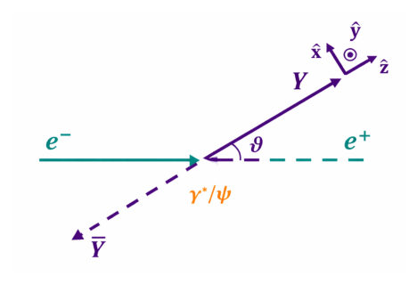
<figcaption class="paper-figure-caption"><b>Fig 1.</b> FIG. 1: The coordinate system adopted in the analysis is de- fined by the orthogonal directions {ˆx, ˆy, ˆz} in the rest frame of Y , and equivalently in that of Y .</figcaption>
</figure>
<figure class="paper-figure-card">
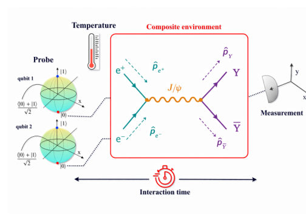
<figcaption class="paper-figure-caption"><b>Fig 2.</b> FIG. 2: We consider a quantum thermometric protocol based on a single two-level system that undergoes dephasing as a result of its interaction with a structured reservoir initially at thermal equilibrium. In this picture, dephasing is illustrated by the contraction of the Bloch sphere in the interaction frame. Once the interaction has taken place, the temperature is in- ferred by performing a measurement along the optimal spin direction.</figcaption>
</figure>
<figure class="paper-figure-card">
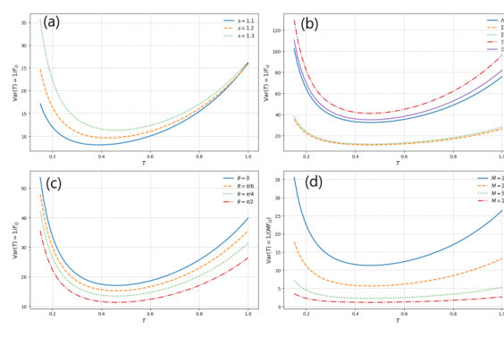
<figcaption class="paper-figure-caption"><b>Fig 3.</b> FIG. 3: The minimal bound on the variances of the individual estimators of the parameter T for different ohmicity s, hyper- ons Y , diffusion angle θ and the number of measurements M.</figcaption>
</figure>
<figure class="paper-figure-card">
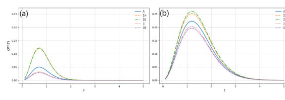
<figcaption class="paper-figure-caption"><b>Fig 4.</b> FIG. 4: In the upper panel, we plot the contour lines of the ratio R associated with the Σ hyperon for different Ohmici- ties, namely s = 1 and s = 3. In the lower panel, we present the QFI as a function of time t for different hyperons in order to identify the optimal hyperon exhibiting the highest thermal sensitivity.</figcaption>
</figure>
<figure class="paper-figure-card">
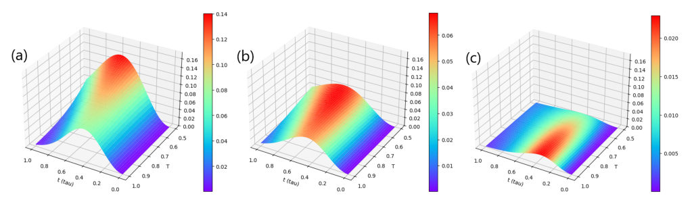
<figcaption class="paper-figure-caption"><b>Fig 5.</b> FIG. 5: We show the QFI H(T, t) as a function of both the reservoir temperature T and the interaction time t for three illustrative types of structured environments: (a) (s = 1), (b) (s = 1.5), and (c) (s = 2.5).</figcaption>
</figure>
</div>

<p><strong>Summary.</strong> This work develops a quantum thermometry protocol using hyperon-antihyperon pairs as probes interacting with a thermal bath. By analyzing the QFI and comparing mutual versus local dephasing, the authors determine optimal sensing conditions. The study highlights the interplay between environmental spectral structure and the choice of quantum correlation measure for high-precision temperature estimation.</p>
<p><strong>Why it may be interesting.</strong> It directly applies advanced quantum information tools (QFI, correlation measures) to a physical problem (thermometry) involving open quantum systems and particle physics, providing insights into how environmental coupling affects quantum sensing limits.</p>
<details>
<summary>Detailed structure</summary>
<p><strong>Main problem.</strong> The paper investigates quantum thermometry, aiming to estimate the temperature of a large system using a small quantum probe.</p>
<p><strong>Main result.</strong> Common-bath configurations outperform local baths at short times due to bath-induced correlations, and the analysis establishes finite optimal times and temperatures for sensing.</p>
<p><strong>Method.</strong> The study employs quantum estimation theory, calculating the Quantum Fisher Information (QFI) and Quantum Signal-to-Noise Ratio (QSNR) for the probe dynamics.</p>
<p><strong>Model / system.</strong> The system uses a two-qubit probe (hyperon-antihyperon pair, YY) coupled to a bosonic thermal reservoir in a pure-dephasing framework. The dynamics are analyzed under both mutual (common-bath) and local dephasing.</p>
<p><strong>Key observables.</strong> Quantum Fisher Information (QFI), Quantum Signal-to-Noise Ratio (QSNR), Entanglement, Quantum Discord, Steering, and Bell nonlocality.</p>
<p><strong>Important parameters / regimes.</strong> Ohmicity parameter (s), deviation angle (θ), decay coefficients (α, β), interaction time (t), and temperature (T).</p>
<p><strong>Assumptions / limitations.</strong> The analysis assumes an Ohmic-class spectral density for the reservoir and focuses on the pure-dephasing limit.</p>
<p><strong>Figures summary.</strong> Figures illustrate the orthogonal coordinate system used for analysis and schematically show the Bloch sphere contraction due to dephasing during the thermometric protocol.</p>
<p><strong>Paper structure.</strong> The paper develops the theoretical framework by modeling the open quantum system dynamics, calculating the QFIM for temperature estimation, and then performing a comparative analysis of quantum correlation measures (entanglement, discord, etc.) across different environmental coupling regimes.</p>
</details>
<details>
<summary>Abstract</summary>
<p>We investigate quantum thermometry in Ohmic-type reservoirs using two-qubit probes within an exactly solvable pure-dephasing framework. By analyzing the individual variance associated with temperature estimation, we identify optimal regimes governed by the Ohmicity parameter $s$, the deviation angle $θ$, and the decay coefficients $α$ and $β$, thereby determining the conditions that minimize estimation errors. The Quantum Fisher Information (QFI) exhibits pronounced maxima at finite interaction times, especially in sub-Ohmic and Ohmic environments at low temperatures, whereas super-Ohmic reservoirs flatten the QFI peak and shift the optimal sensitivity toward higher temperatures. Consistently, the quantum signal-to-noise ratio (QSNR) is suppressed at low temperatures, increases with thermal excitation, and saturates in the high-temperature regime, where the influence of spectral details becomes negligible. A comparative study of mutual and local estimation strategies shows that common-bath configurations, particularly for $Σ^+$ and $Σ^0$ probes, outperform local baths at short interaction times due to bath-induced correlations, while local environments become advantageous at longer times. The analysis further reveals finite optimal values of both the interaction time $t_{\rm opt}$ and the temperature $T_{\rm opt}$, as well as a strong reduction of the variance with increasing measurement number in the low-temperature regime. In addition, our study of hyperon-antihyperon channels ($Λ$, $Σ^+$, $Σ^0$, $Ξ^-$, $Ξ^0$) shows that entanglement and quantum discord remain remarkably robust over broad angular domains, whereas steering and Bell nonlocality are confined to narrower regions. Overall, the interplay between spectral structure, particle-dependent parameters, and estimation strategy provides valuable ...</p>
</details>
<p><sub><a href="#top">↑ back to top</a></sub></p>

<p><a id="paper-2608.20156"></a></p>
<h3 id="biorthogonal-conformal-dynamics-in-non-hermitian-quantum-quenches"><a href="http://arxiv.org/abs/2608.20156v1">Biorthogonal Conformal Dynamics in Non-Hermitian Quantum Quenches</a></h3>
<p><strong>Authors:</strong> Yifan Liu<br>
<strong>Type:</strong> theory · <strong>Category:</strong> statistical mechanics · <strong>PDF:</strong> <a href="https://arxiv.org/pdf/2608.20156v1">https://arxiv.org/pdf/2608.20156v1</a><br>
<strong>Analysis basis:</strong> full PDF text, analyzed in chunks
<strong>Topic relevance:</strong> <code>non-equilibrium universality</code> <strong>3/5</strong> · <code>Keldysh / 2PI / non-Gaussian methods</code> <strong>2/5</strong> · <code>methods for driven-dissipative</code> <strong>2/5</strong> · <code>analog quantum simulation</code> <strong>1/5</strong> · <code>correlated / nonlocal dissipation</code> <strong>1/5</strong> · <code>driven-dissipative phase transition</code> <strong>1/5</strong></p>
<div class="figure-strip-hint">↔ Scroll figures horizontally</div>
<div class="paper-figures-scroll">
<figure class="paper-figure-card">
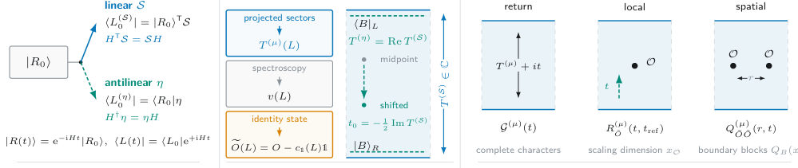
<figcaption class="paper-figure-caption"><b>Fig 1.</b> FIG. 1. Biorthogonal global quenches as temporal-boundary problems. (a) A non-Hermitian readout requires both an evolving right ket and a left covector. The linear S pairing and the antilinear η pairing fix two symmetry-related left preparations from the same right preparation; the general construction also allows independent left and right states. (b) In the scaling limit, the preparation pair becomes two temporal boundaries with total extrapolation parameter T = τR + τL. Projected sector weights determine T (µ)(L), spectroscopy fixes v(L), and an identity-sector matrix element fixes the static operator matching eO(L) = O −c1(L)1. For a preparation admitting both pairings, T (η) = Re T (S)...</figcaption>
</figure>
<figure class="paper-figure-card">

<figcaption class="paper-figure-caption"><b>Fig 2.</b> FIG. 2. Pairing-resolved total extrapolation parame- ters in the Yang–Lee chain. (a) Complex-plane trajectories of T (S) α for the three filtered product preparations at β = 1 and L = 12, 14, . . . , 22. Product X remains real, whereas product Z and XZ preparations retain finite imaginary com- ponents. Symbols darken with increasing L. (b) Independently extracted T (η) α (L) versus Re T (S) α (L). Dashed diagonal repre- sents the analytic identity in Eq. (64).</figcaption>
</figure>
<figure class="paper-figure-card">
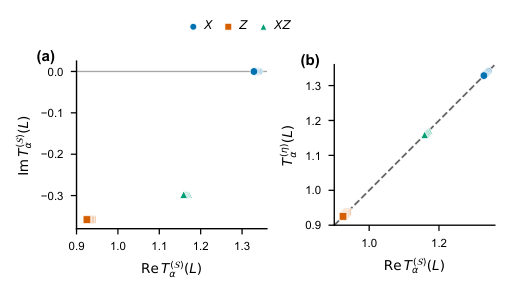
<figcaption class="paper-figure-caption"><b>Fig 3.</b> Figure 2(a) shows the finite-size flow of the three S- paired parameters. Product X remains on the real axis, whereas the product-Z and product-XZ preparations retain stable imaginary components. Because Eq. (64) follows analytically from the real, nondegenerate sector</figcaption>
</figure>
<figure class="paper-figure-card">
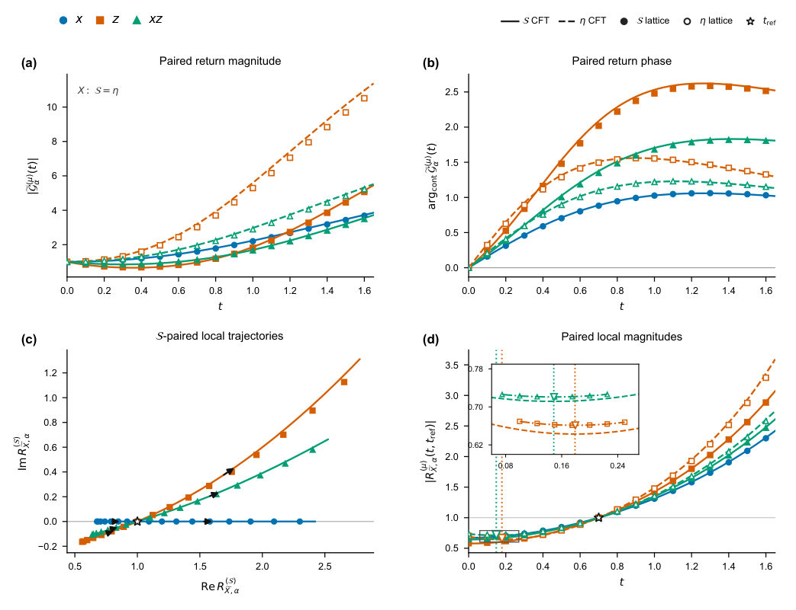
<figcaption class="paper-figure-caption"><b>Fig 4.</b> FIG. 3. Return amplitudes and local-primary dynamics for paired preparations in the Yang–Lee model. (a,b) Magnitude and continuously tracked phase of the return amplitudes at L = 22 for product X, product Z, and the XZ preparation. Solid curves and filled symbols denote the S pairing; dashed curves and open symbols denote the η pairing. Curves are the signed complete-character predictions using the statically determined extrapolation parameters, and symbols are lattice data. The two product-X returns coincide exactly. (c) Complex trajectories of the normalized S-paired one-point function of e Xj. Arrows indicate increasing time, and all trajectories pass through R e X(tref) = 1. (d)...</figcaption>
</figure>
<figure class="paper-figure-card">
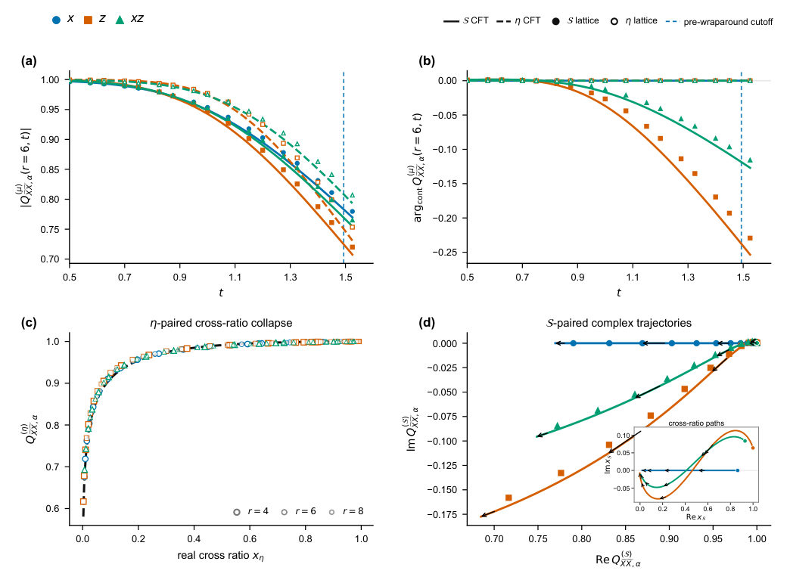
<figcaption class="paper-figure-caption"><b>Fig 5.</b> FIG. 4. Correlator dynamics for filtered paired preparations in the Yang–Lee model. All lattice data use L = 22 and the statically subtracted operator in Eq. (67). The plotted ratio is Q(µ) e X e X,α(r, t) = G(µ) e X e X,α(r, t)/[m(µ) e X,α(t)]2, without an additional time normalization. Colors and marker shapes identify the preparations X, Z, and XZ; solid curves and filled symbols denote the S pairing, while dashed curves and open symbols denote the η pairing. (a) |Q e X e X| and (b) its continuously unwrapped phase at r = 6. The vertical dashed line marks the conservative pre-wraparound condition in Eq. (85). Early-time data (t &lt; 0.5) remain nearly constant and are therefore omitted. (c)...</figcaption>
</figure>
</div>

<p><strong>Summary.</strong> This paper introduces a Boundary Conformal Field Theory (BCFT) framework to analyze quantum quenches in non-Hermitian critical systems. It treats the dynamics using biorthogonal evolution, requiring both a left and right preparation state. The framework successfully predicts universal post-quench dynamics by relating complex boundary parameters derived from the system's symmetries to measurable observables.</p>
<p><strong>Why it may be interesting.</strong> The extension of CFT techniques to non-Hermitian dynamics is highly relevant for open quantum systems, as non-Hermiticity often arises in realistic physical models involving dissipation or gain, which are key areas in AMO physics.</p>
<details>
<summary>Detailed structure</summary>
<p><strong>Main problem.</strong> The paper aims to establish a comprehensive Boundary Conformal Field Theory (BCFT) framework for analyzing global quenches in interacting, non-Hermitian critical systems.</p>
<p><strong>Main result.</strong> It successfully develops a microscopic BCFT framework that describes universal post-quench dynamics by relating left and right preparation boundary conditions to the evolution of observables.</p>
<p><strong>Method.</strong> The methodology involves generalizing the Calabrese–Cardy ansatz to the non-Hermitian setting, utilizing biorthogonal time evolution, and exploiting linear/antilinear symmetry pairings to constrain the geometry.</p>
<p><strong>Model / system.</strong> The study focuses on non-Hermitian critical systems, tested with the Yang–Lee spin chain and a complex five-state Potts fixed point. The dynamics are governed by a non-Hermitian Hamiltonian, requiring both a right ket and a left covector for evolution.</p>
<p><strong>Key observables.</strong> Return amplitude ($\mathcal{G}(t)$), one-point function ($  ilde{\mathcal{O}}(t, t_{    ext{ref}})$), and spatial correlator ($   ilde{\mathcal{O}}   ilde{\mathcal{O}}(r, t)$).</p>
<p><strong>Important parameters / regimes.</strong> Complex one-sided extrapolation parameters ($   au_R,   au_L$) and the total extrapolation parameter $T = 	au_L + 	au_R$.</p>
<p><strong>Assumptions / limitations.</strong> The core assumption is that the right and left preparations flow to the same conformal boundary condition, and the analysis relies on linking left and right initial states.</p>
<p><strong>Figures summary.</strong> Figures illustrate the formalism, showing how the input data (static lattice calibrations) leads to three distinct dynamical outputs ($\mathcal{G}(t)$, $   ilde{\mathcal{O}}(t, t_{    ext{ref}})$, $  ilde{\mathcal{O}}   ilde{\mathcal{O}}(r, t)$) in the BCFT framework.</p>
<p><strong>Paper structure.</strong> The paper develops the formalism by generalizing the BCFT approach to non-Hermitian quenches, details the role of symmetry pairings in constraining the geometry, and validates the framework by comparing predictions for various observables (return, one-point, two-point) across different preparation scenarios.</p>
</details>
<details>
<summary>Abstract</summary>
<p>Global quenches at one-dimensional critical points admit a boundary conformal field theory (BCFT) description in which Euclidean strip correlators are analytically continued to real time. We formulate this construction for interacting non-Hermitian critical systems, where a right ket alone does not specify the dynamical readout and the left covector is part of the microscopic quench protocol. Independent left and right preparations flowing to the same conformal boundary define the two temporal boundaries of a strip with generally complex one-sided extrapolation parameters; linear and antilinear symmetry pairings are exploited to constrain this geometry. In the interacting Yang-Lee spin chain, statically calibrated boundary data determine the biorthogonal dynamics of the complete-character return amplitude, a primary one-point function, and a spatial correlator. The imaginary part of the linear-paired extrapolation parameter predicts the temporal center of an independently evolved antilinear-paired one-point function at the $10^{-3}$ relative level; the same preparation phase controls local phase evolution and the analytic-continuation path of boundary blocks. Further results test this formalism with a direct field-on quench, mixed left and right preparations, and a complex five-state Potts fixed point with complex primary dimensions. These results establish a BCFT framework for biorthogonal global quenches in interacting non-Hermitian critical systems, in which complex temporal-boundary data organize universal post-quench dynamics.</p>
</details>
<p><sub><a href="#top">↑ back to top</a></sub></p>

<p><a id="paper-2608.19305"></a></p>
<h3 id="holographic-local-operator-quenches-with-conserved-momentum-and-spin"><a href="http://arxiv.org/abs/2608.19305v1">Holographic Local Operator Quenches with Conserved Momentum and Spin</a></h3>
<p><strong>Authors:</strong> Pawel Caputa, Pedro Castellini Grand, Justin R. David, Rahul Metya<br>
<strong>Type:</strong> theory · <strong>Category:</strong> statistical mechanics · <strong>PDF:</strong> <a href="https://arxiv.org/pdf/2608.19305v1">https://arxiv.org/pdf/2608.19305v1</a><br>
<strong>Analysis basis:</strong> full PDF text, analyzed in chunks
<strong>Topic relevance:</strong> <code>non-equilibrium universality</code> <strong>3/5</strong> · <code>scars &amp; prethermalization</code> <strong>3/5</strong> · <code>Keldysh / 2PI / non-Gaussian methods</code> <strong>2/5</strong> · <code>quantum measurements</code> <strong>2/5</strong></p>
<div class="figure-strip-hint">↔ Scroll figures horizontally</div>
<div class="paper-figures-scroll">
<figure class="paper-figure-card">
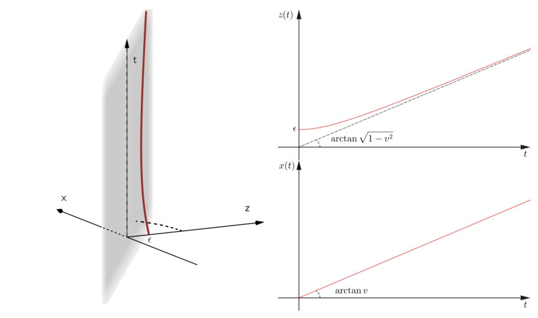
<figcaption class="paper-figure-caption"><b>Fig 1.</b> Figure 1: Particle’s trajectory in Poincar´e coordinates. The left panel shows the worldline (red) parametrised as (z(t), x(t), t), originating at the cut-off surface z = ϵ. The gray plane is marked to show that, at late times, the particle effectively moves in this slice of AdS3. The right panels display the time dependence of the coordinates z(t) and x(t), with (asymptotic) slopes determined by √</figcaption>
</figure>
<figure class="paper-figure-card">
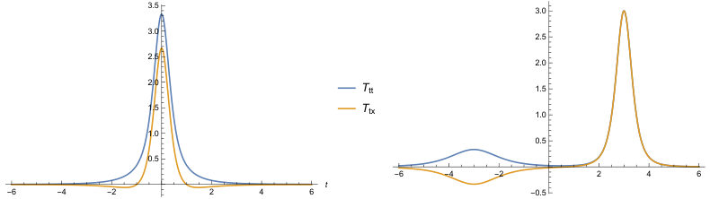
<figcaption class="paper-figure-caption"><b>Fig 2.</b> Figure 2: Time evolution of energy and momentum densities (normalized by mR/π) for t = 0 (left) and t = 3 (right). Plot for ϵ = 1 and tanh(η2) = 1/2. On the right plot, the profiles of Ttt and Ttx moving to the right coincide, up to our numerical precision.</figcaption>
</figure>
<figure class="paper-figure-card">
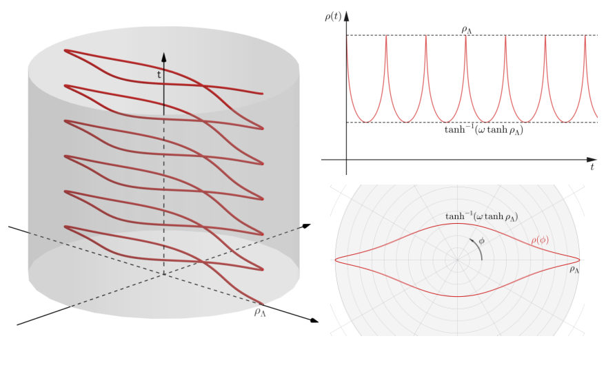
<figcaption class="paper-figure-caption"><b>Fig 3.</b> Figure 3: Particle’s trajectory in Global Coordinates. The left panel shows the worldline (red) parametrised as (ρ(t) cos ϕ(t), ρ(t) sin ϕ(t), t), originating at the cutoff surface ρ = ρΛ. The right panels display the time dependence of the coordinate ρ and the trajectory given as ρ(ϕ), respectively</figcaption>
</figure>
<figure class="paper-figure-card">
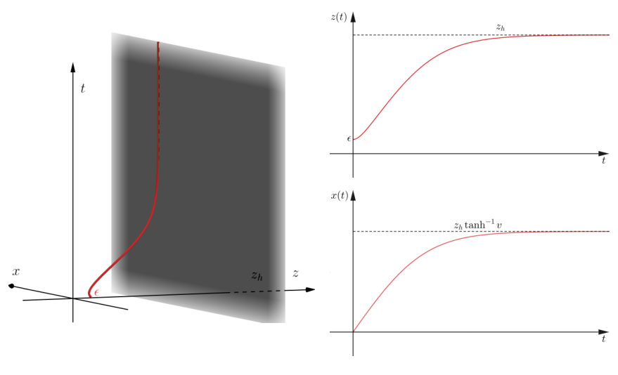
<figcaption class="paper-figure-caption"><b>Fig 4.</b> Figure 4: Particle’s trajectory in the BTZ background. The left panel shows the worldline (red) parametrised as (z(t), x(t), t), originating at the cut-off surface z = ϵ. The black plane represents the BTZ horizon at z = zh. The right panels display the time dependence of the coordinates z(t) and x(t), with asymptotes given by zh and zh arctan v, respectively.</figcaption>
</figure>
<figure class="paper-figure-card">
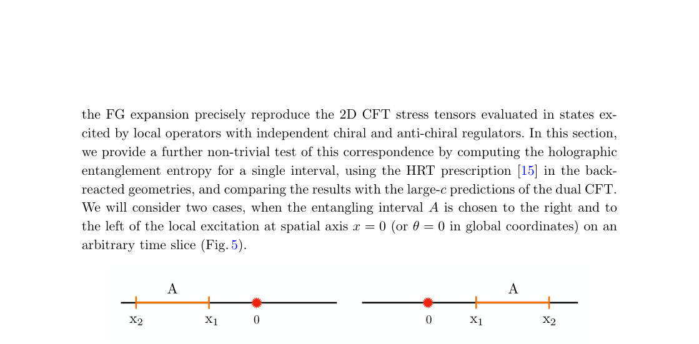
<figcaption class="paper-figure-caption"><b>Fig 5.</b> Figure 5: Our setup for computing entanglement entropy for a single interval A = [x1, x2], placed to the left or to the right of the excitation at x = 0.</figcaption>
</figure>
</div>

<p><strong>Summary.</strong> This work extends the holographic dictionary to include point particles carrying conserved momentum and spin in AdS_3. By calculating observables like energy density and entanglement entropy on both the gravity and CFT sides, the authors demonstrate precise quantitative agreement. This establishes a robust framework for studying non-equilibrium dynamics in strongly coupled systems using conserved charges.</p>
<p><strong>Why it may be interesting.</strong> The rigorous matching of conserved charges (momentum/spin) between gravity and CFT provides powerful, concrete examples of how quantum information measures behave in non-equilibrium, strongly coupled systems, relevant to understanding quantum chaos.</p>
<details>
<summary>Detailed structure</summary>
<p><strong>Main problem.</strong> The paper investigates the holographic dictionary connecting point particles with conserved momentum or spin in AdS_3 spacetime to time-evolved states created by local primary operators in the dual 2D CFT.</p>
<p><strong>Main result.</strong> The authors find exact agreement between CFT and gravity descriptions for energy density and entanglement entropy when considering conserved momentum and intrinsic spin in these holographic quenches.</p>
<p><strong>Method.</strong> The study employs the AdS/CFT correspondence, calculating back-reacted geometries and stress tensors on the gravity side, and comparing these results with calculations of entanglement entropy and energy density on the CFT side.</p>
<p><strong>Model / system.</strong> The system involves massive particles propagating in asymptotically AdS_3 spacetimes (Poincaré, Global, BTZ) on the gravity side, dual to local primary operators in a 2D CFT on the field theory side.</p>
<p><strong>Key observables.</strong> Energy density, entanglement entropy (and Rényi entropies), and the stress tensor components.</p>
<p><strong>Important parameters / regimes.</strong> Longitudinal momentum, angular momentum, intrinsic spin, and the AdS radius (R).</p>
<p><strong>Assumptions / limitations.</strong> The analysis relies fundamentally on the AdS/CFT correspondence and extends previous work to include conserved charges beyond simple energy quenches.</p>
<p><strong>Figures summary.</strong> Figure 1 illustrates the particle's trajectory in Poincaré coordinates, while Figure 2 shows the time evolution of energy and momentum density derived from the stress tensor.</p>
<p><strong>Paper structure.</strong> The paper progresses by establishing the gravity setup for charged particles, detailing the CFT description via local operator quenches, calculating entanglement entropy in AdS_3/CFT_2, extending the analysis to include intrinsic spin, and concluding with applications to rational CFTs and general local quenches.</p>
</details>
<details>
<summary>Abstract</summary>
<p>We investigate the holographic dictionary relating point particles carrying longitudinal momentum or angular momentum in asymptotically AdS$_3$ spacetimes to suitably regulated, time-evolved states created by local primary operators in the dual two-dimensional conformal field theory (2D CFT). We find that asymmetric left/right Euclidean smearing of local operators produces states carrying momentum, and the corresponding bulk excitation is a particle with conserved momentum. We compute the energy density and entanglement entropy in these states and in their dual back-reacted geometries, finding exact agreement between the CFT and gravity descriptions. We further extend this correspondence to particles with intrinsic spin, whose CFT duals are primary operators with unequal holomorphic and anti-holomorphic scaling dimensions. We again find a precise match between CFT and holographic calculations of energy densities and entanglement entropies. Finally, we explore applications of these setups beyond holography by deriving the evolution of Rényi entropies in 2D rational CFTs and introducing a new class of local quantum quench protocols with conserved longitudinal or angular momentum.</p>
</details>
<p><sub><a href="#top">↑ back to top</a></sub></p>

<p><a id="paper-2608.20221"></a></p>
<h3 id="universal-meson-spectra-near-math383math-dimensional-ising-criticality"><a href="http://arxiv.org/abs/2608.20221v1">Universal meson spectra near $(1+1)$-dimensional Ising criticality</a></h3>
<p><strong>Authors:</strong> Xiao Wang, Jianda Wu<br>
<strong>Type:</strong> theory · <strong>Category:</strong> statistical mechanics · <strong>PDF:</strong> <a href="https://arxiv.org/pdf/2608.20221v1">https://arxiv.org/pdf/2608.20221v1</a><br>
<strong>Analysis basis:</strong> full PDF text, analyzed in chunks
<strong>Topic relevance:</strong> <code>analog quantum simulation</code> <strong>3/5</strong> · <code>non-equilibrium universality</code> <strong>3/5</strong> · <code>methods for driven-dissipative</code> <strong>2/5</strong> · <code>Frenkel-Kontorova</code> <strong>1/5</strong> · <code>Keldysh / 2PI / non-Gaussian methods</code> <strong>1/5</strong></p>
<div class="figure-strip-hint">↔ Scroll figures horizontally</div>
<div class="paper-figures-scroll">
<figure class="paper-figure-card">
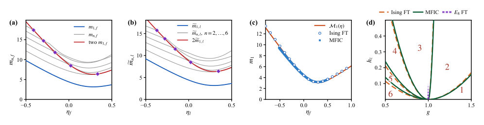
<figcaption class="paper-figure-caption"><b>Fig 1.</b> FIG. 1. Universal meson mass trajectories and stable-meson crossover windows. (a) The six lowest meson masses of the Ising field theory as functions of ηf = −λ/|h|8/15. The field-theory data are calculated at h = 1 by scanning ηf from −0.5 to 0.5 in steps of 0.01. The blue curve denotes m1,f, the gray curves denote mn,f with n = 2, . . . , 6, and the red curve denotes the lightest two-particle threshold 2m1,f. The purple diamonds mark the crossings between the higher masses and 2m1,f. (b) The corresponding reduced MFIC masses emn,l as functions of ηl. The MFIC calculation uses hz = 0.018 and is parameterized by ¯ηl = (g −gc)/h8/15 z , with g = gc + ¯ηlh8/15 z , gc = 1, and ηl = Cf...</figcaption>
</figure>
<figure class="paper-figure-card">
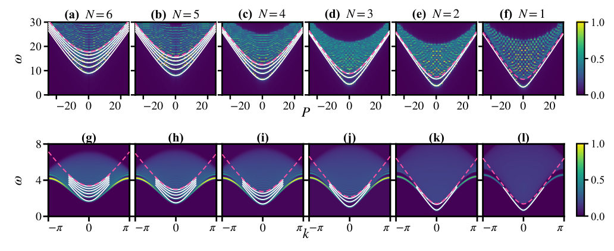
<figcaption class="paper-figure-caption"><b>Fig 2.</b> FIG. 2. Dynamical signatures of the meson crossover windows. (a)–(f) Normalized energy-density DSFs Sεε(ω, P) of the IFT at ηf = −0.43, −0.35, −0.20, 0, 0.10, and 0.35, respectively. (g)–(l) Corresponding normalized DSFs Sxx(ω, k) of the MFIC obtained by iTEBD. For these panels, the longitudinal field is hz = 0.036, and the transverse fields g = 0.74, 0.80, 0.84, 0.94, 1.12, and 1.26 correspond to the rescaled parameters ηl = −0.40, −0.30, −0.24, −0.091, 0.18, and 0.40, respectively. Each set of panels follows the same sequence of threshold-based meson counts N = 6, 5, · · · , 1. The white solid curves show the first N single-meson relativistic energy-momentum dispersion guides. The magenta...</figcaption>
</figure>
<figure class="paper-figure-card">
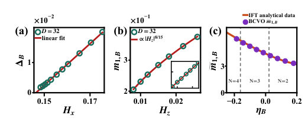
<figcaption class="paper-figure-caption"><b>Fig 3.</b> FIG. 3. Calibration of the BCVO scaling variables and lightest-meson trajectory. (a) Lowest excitation gap at Hz = 0 obtained from the D = 32 VUMPS calculation. The red line is a linear fit in Hx. (b) Lightest mass at the independently calibrated critical field Hx = Hc,B = 0.1454 as a function of Hz. The red line is a fit with exponent 8/15, and the in- set shows the same data on logarithmic scales. (c) Reduced lightest-meson masses along the self-consistent BCVO field path from 1 to 9 T. The orange curve is the field-theory an- alytical data generated from Eq. (2), evaluated at ηf = ηB, the purple circles are the BCVO results, and the gray dashed lines are the mapped threshold crossings....</figcaption>
</figure>
<figure class="paper-figure-card">
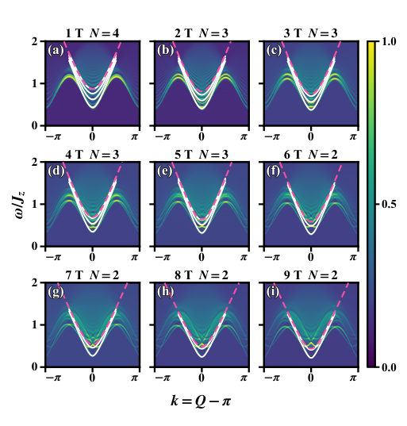
<figcaption class="paper-figure-caption"><b>Fig 4.</b> FIG. 4. Field evolution of the BCVO meson spectrum. (a)–(i) Normalized combined transverse DSFs Sxx(ω, Q) + Syy(ω, Q) for B = 1, 2, . . . , 9 T, using the self-consistent Hz at each field. The momentum is measured from the antifer- romagnetic wave vector, k = Q −π. The white solid curves show the first N one-meson dispersion guides obtained from the mapped IFT spectrum. The magenta dashed curve is the corresponding two-lightest-meson threshold guide. The panel headings give the threshold-based stable-meson count N.</figcaption>
</figure>
</div>

<p><strong>Summary.</strong> This work establishes a universal scaling law for the meson excitation spectrum near the (1+1)D Ising critical point. By comparing results from continuum field theory, lattice models, and real quantum magnets, the authors demonstrate that the organization of these excitations is governed by a single universal curve. This provides a powerful, predictive criterion for analyzing quasi-1D quantum magnets.</p>
<p><strong>Why it may be interesting.</strong> The concept of universal scaling across different physical realizations (field theory vs. lattice vs. material) is highly relevant for AMO physics, as it provides a powerful tool to predict behavior in complex quantum materials based on established critical theories.</p>
<details>
<summary>Detailed structure</summary>
<p><strong>Main problem.</strong> The paper investigates the universal scaling behavior of meson excitation spectra near the critical point of the (1+1)-dimensional Ising model.</p>
<p><strong>Main result.</strong> The meson masses exhibit universal scaling across different microscopic models (field theory, lattice chains, and real materials like BCVO), suggesting a deep underlying organization governed by the Ising critical point.</p>
<p><strong>Method.</strong> The study employs advanced theoretical techniques including Conformal Field Theory (CFT) analysis, Hamiltonian truncation, and tensor-network methods (iTEBD, VUMPS) to calculate spectra in both continuum and lattice limits.</p>
<p><strong>Model / system.</strong> The primary model is the (1+1)D Ising model, studied in its field theory limit (IFT) and realized in lattice systems like the Mixed-Field Ising Chain (MFIC) and quasi-1D antiferromagnets (e.g., BaCo2V2O8).</p>
<p><strong>Key observables.</strong> Meson mass spectrum ($m_n$), lightest meson mass trajectory ($m_1$), and the count of stable mesons determined by two-meson thresholds.</p>
<p><strong>Important parameters / regimes.</strong> The scaling parameter $\eta_f$ (or $\eta_l$) characterizes the approach to criticality, and the analysis covers the transition from the critical point to the confining regime.</p>
<p><strong>Assumptions / limitations.</strong> The analysis assumes that the low-energy physics near criticality is governed by the Ising CFT and that the system can be mapped onto effective field theories or integrable lattice models.</p>
<p><strong>Figures summary.</strong> Figures illustrate the universal collapse of meson mass trajectories and stable-meson crossover windows when comparing results from the continuum field theory, the lattice model (MFIC), and experimental material calculations (BCVO).</p>
<p><strong>Paper structure.</strong> The paper systematically compares results from three perspectives: the continuum Ising Field Theory (IFT), the discrete lattice model (MFIC), and a specific material realization (BCVO). The core argument is the demonstration that all these disparate systems collapse onto a single universal scaling curve.</p>
</details>
<details>
<summary>Abstract</summary>
<p>Near $(1+1)$-dimensional [$(1+1)$D] Ising criticality, a magnetic perturbation induces confinement and produces a cascade of bound-state excitations known as mesons. Here we show these mesons share a universal mass scaling after independently rescaling the model-dependent microscopic couplings. The number of stable mesons is controlled by the lightest two-meson threshold, while the lightest-meson mass follows a continuous trajectory characterized by a single scaling parameter. Using Hamiltonian truncation method, we obtain the trajectory numerically in both Ising field theory and the near-critical mixed-field Ising chain (MFIC). Under the rescaling, the trajectory and stable-meson-count crossover windows of MFIC both collapse onto the field-theory results. To further demonstrate the above universal organization of the meson spectra, we consider a class of four-periodic spin-$1/2$ Heisenberg-Ising chains under transverse fields, whose parameter space contains a family of quantum Ising critical points. The Hamiltonian family includes effective spin models for the quasi-one-dimensional antiferromagnets Ba(Sr)Co$_2$V$_2$O$_8$. Using tensor-network calculations, we obtain the corresponding lightest-meson mass trajectory for BaCo$_2$V$_2$O$_8$ and find that it also collapse onto the same universal curve given by field-theory result. Our results suggest that the universal scaling structure of quantum Ising criticality extends into the nearby confining regime, governing the organization of the meson spectrum. They thereby provide a practical criterion for interpreting excitations of quasi-1D Ising-like magnets in mixed fields beyond $E_8$ integrability.</p>
</details>
<p><sub><a href="#top">↑ back to top</a></sub></p>

<p><a id="paper-2608.19668"></a></p>
<h3 id="a-charge-selection-rule-fixes-what-a-squeezed-light-reservoir-computer-can-compute-and-afford"><a href="http://arxiv.org/abs/2608.19668v1">A charge selection rule fixes what a squeezed-light reservoir computer can compute and afford</a></h3>
<p><strong>Authors:</strong> Daniel Soh<br>
<strong>Type:</strong> theory · <strong>Category:</strong> quantum information and computing · <strong>PDF:</strong> <a href="https://arxiv.org/pdf/2608.19668v1">https://arxiv.org/pdf/2608.19668v1</a><br>
<strong>Analysis basis:</strong> full PDF text, analyzed in chunks
<strong>Topic relevance:</strong> <code>quantum measurements</code> <strong>3/5</strong> · <code>Full counting statistics</code> <strong>1/5</strong> · <code>analog quantum simulation</code> <strong>1/5</strong> · <code>driven-dissipative phase transition</code> <strong>1/5</strong> · <code>interference shaping light</code> <strong>1/5</strong> · <code>methods for driven-dissipative</code> <strong>1/5</strong> · <code>quantum optics experiment</code> <strong>1/5</strong></p>
<div class="figure-strip-hint">↔ Scroll figures horizontally</div>
<div class="paper-figures-scroll">
<figure class="paper-figure-card">
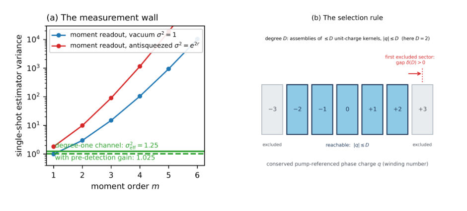
<figcaption class="paper-figure-caption"><b>Fig 1.</b> FIG. 1. One conservation law prices a quantum machine. (a) The measurement wall. Single-shot variance of an order-m moment estimator, (2m−1)!! σ2m [Eq. (1)], for vacuum (σ2=1) and antisqueezed (σ2=e2r, r=0.3) readout, against the machine’s order-one channel, whose estimator variance is pinned at order one (σ2 eff = 1.25 at the campaign point, 1.025 with pre-detection phase-sensitive gain suppressing the detection-loss penalty; Methods). (b) The selection rule. The conserved pump-referenced phase charge organizes the reachable function space: order-D polynomial post-processing reaches exactly the D-block assemblies of unit-charge kernels, confined to the sectors |q| ≤D (Theorem 1), with the...</figcaption>
</figure>
<figure class="paper-figure-card">
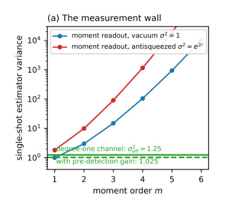
<figcaption class="paper-figure-caption"><b>Fig 2.</b> Figure 2 shows the machine: the polynomial is com- puted in the dynamics by a single-pass χ(2) segment in the delay loop, and the measurement is pinned at poly- nomial order one (walkthrough in SI Sec. S8; Table II separates hardware targets from the conservative cam- paign point behind every result). Bilinear encoding. The phase-modulated pump meets the squeezer at angle</figcaption>
</figure>
<figure class="paper-figure-card">
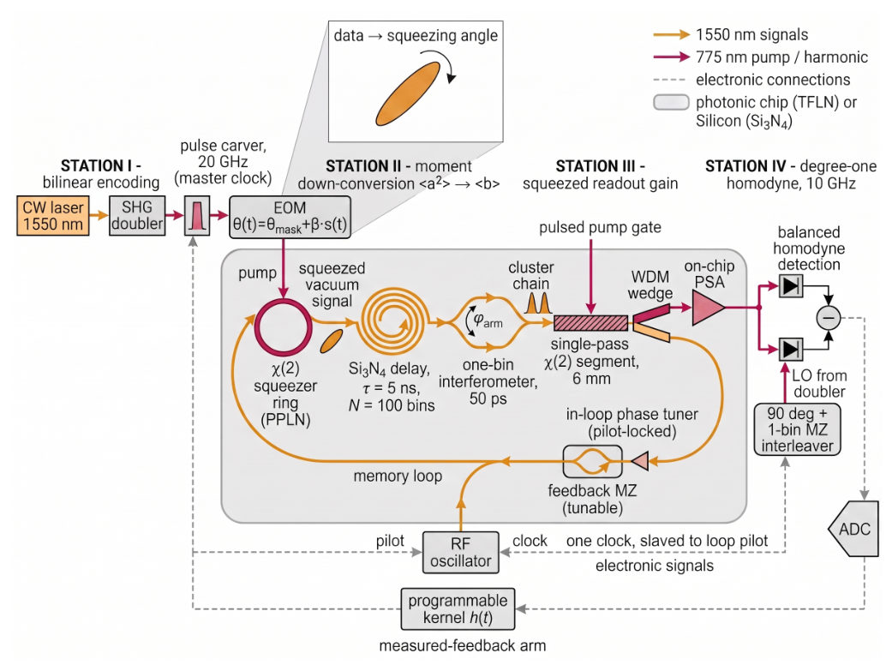
<figcaption class="paper-figure-caption"><b>Fig 3.</b> FIG. 2. The measurement-economical squeezed-light reservoir. Signal flow runs left to right. False color throughout: amber is the 1550-nm fundamental band, crimson the 775-nm harmonic band, dashed gray the electronics. Encoding (station I). A continuous-wave 1550-nm laser is frequency doubled. The 775-nm pump is carved into a 20-GHz pulse train that serves as the master clock, and an electro-optic modulator writes the data into the pump phase, and hence into the squeezing angle, θ(t) = θmask + βs(t). Squeezing. On a hybrid TFLN/Si3N4 chip the pulsed pump drives a periodically poled squeezer ring (χ(2) OPO). It generates squeezed vacuum at 1550 nm whose ellipse orientation carries the...</figcaption>
</figure>
<figure class="paper-figure-card">
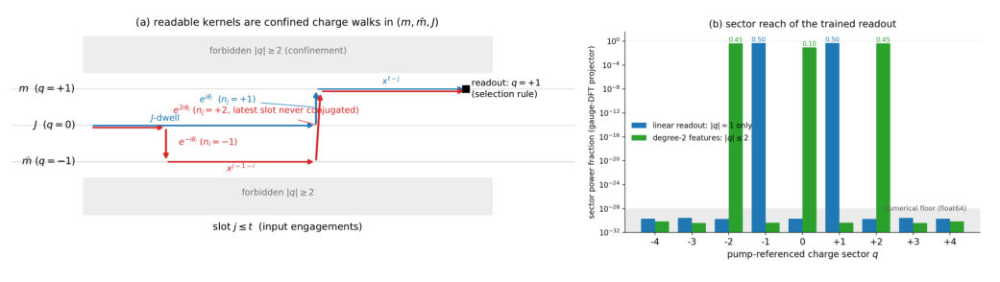
<figcaption class="paper-figure-caption"><b>Fig 4.</b> FIG. 3. The charge-confinement law, pictorially. (a) Every readable kernel monomial of the exact dynamics is a walk of pump-referenced phase charge on the three channels (m, ¯m, J) of Eq. (6), confined to |q| ≤1 (shaded regions are unreachable in flight). Blue: the grade-one walk of Eq. (8) — a J-dwell, a single engagement eiθj, and geometric decay xt−j to the readout. Red: the grade-two family of Eq. (9) — an early conjugated engagement e−iθi into ¯m, a dwell, and the double-charged step e2iθj at the latest engaged slot, which the ordering law forbids to be conjugated. Every walk terminates in m with net charge q = +1: the selection rule of Corollary 1. (b) The same algebra measured:...</figcaption>
</figure>
<figure class="paper-figure-card">
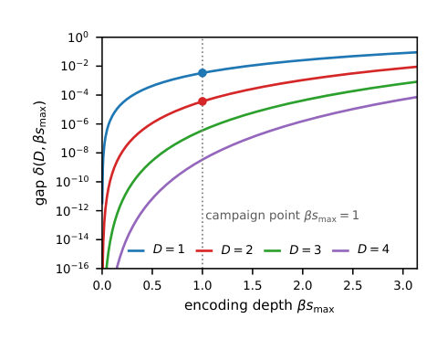
<figcaption class="paper-figure-caption"><b>Fig 5.</b> FIG. 4. The no-go gap, quantitatively. The explicit lower bound δ(D, βsmax) of Theorem 1(III) [Eq. (10)] across poly- nomial order D and encoding depth. The gap is strictly pos- itive throughout the injectivity window 0 &lt; βsmax &lt; π — no finite polynomial order closes the next charge sector — but it decays steeply with D, quantifying why polynomial post-processing (Theorem 1(II)) is cheap in practice: at the campaign operating point βsmax = 1, δ(1, 1) ≈3.4 × 10−3</figcaption>
</figure>
</div>

<p><strong>Summary.</strong> This work establishes a fundamental 'charge selection rule' governing what a squeezed-light reservoir computer can compute and, crucially, what it can afford to measure. By deriving this rule from a conservation law, the authors show that the computational power is strictly limited by the detector's measurement order, not the optical complexity. This provides a powerful, resource-aware theoretical benchmark for quantum machine learning architectures.</p>
<p><strong>Why it may be interesting.</strong> It provides a rigorous, resource-aware characterization of quantum machine learning models, showing that physical constraints (like detector bandwidth) dictate computational power, which is highly relevant for quantum information processing.</p>
<details>
<summary>Detailed structure</summary>
<p><strong>Main problem.</strong> The paper determines the computational limits and, more critically, the measurement cost associated with using a squeezed-light reservoir computer.</p>
<p><strong>Main result.</strong> A conservation law imposes a 'charge selection rule,' restricting the computable functionals to those spanned by at most D unit-charge kernels, while maintaining polynomial measurement cost.</p>
<p><strong>Method.</strong> The analysis uses a theoretical framework involving conservation laws derived from pair-wise photon exchange and is validated using a hardware-faithful digital twin simulation.</p>
<p><strong>Model / system.</strong> The system is an optical continuous-variable reservoir computer utilizing squeezed light, where data is encoded into the parametric pump's phase. The computation relies on the non-linear interaction and subsequent order-one homodyne readout.</p>
<p><strong>Key observables.</strong> Charge (an integer conserved quantity), Normalized Mean Square Error (NMSE), and the achievable functional space spanned by unit-charge kernels.</p>
<p><strong>Important parameters / regimes.</strong> The degree of readout (D), the squeezing parameter (r), and the shot cost (which is shown to be polynomial in accuracy).</p>
<p><strong>Assumptions / limitations.</strong> The readout is limited to order one, even though the dynamics generate higher-order correlations, and the analysis is based on a reduced single-loop model.</p>
<p><strong>Figures summary.</strong> Figures illustrate the selection rule organizing the function space by charge, comparing super-exponential moment estimator variance to the fixed order-one channel variance, and schematically detailing the measurement-economical reservoir components.</p>
<p><strong>Paper structure.</strong> The paper establishes the physical model, derives the conservation law leading to the selection rule, proves the exact characterization of the reachable functional space (Theorem 1), and demonstrates the computational advantage over simple linear filters.</p>
</details>
<details>
<summary>Abstract</summary>
<p>Reading an optical quantum reservoir costs repetitions growing super-exponentially with feature order: what it can afford is set by its detector, not its optics. For reservoirs encoding data in a parametric pump's phase, one conservation law fixes what is readable and what it costs. Pairwise photon exchange conserves an integer phase charge: across an ensemble of input masks, order-D readout reaches exactly the assemblies of at most D unit-charge kernels; degree-one homodyne readout is universal for fading-memory functionals along weak-squeezing families, at shot cost polynomial in accuracy; and at fixed squeezing no finite degree reaches every sector, at a computable distance. Nonlinearity sits in the optics, not the detector, whose per-shot variance is fixed at every order. In a hardware-faithful digital twin-no device was built-the rule is visible: on an open RF corpus a displacement-encoded control at identical photon number loses 17.7 accuracy points, as the charge algebra predicts.</p>
</details>
<p><sub><a href="#top">↑ back to top</a></sub></p>

<p><a id="paper-2608.19943"></a></p>
<h3 id="imaginary-time-evolution-of-a-quantum-system-through-analytic-continuation-from-real-time-quantum-simulation"><a href="http://arxiv.org/abs/2608.19943v1">Imaginary time evolution of a quantum system through analytic continuation from real-time quantum simulation</a></h3>
<p><strong>Authors:</strong> Peng Guo, Anto Shibu, Joshua Lin, Yong Zhao<br>
<strong>Type:</strong> both · <strong>Category:</strong> other · <strong>PDF:</strong> <a href="https://arxiv.org/pdf/2608.19943v1">https://arxiv.org/pdf/2608.19943v1</a><br>
<strong>Analysis basis:</strong> full PDF text, analyzed in chunks
<strong>Topic relevance:</strong> <code>Keldysh / 2PI / non-Gaussian methods</code> <strong>3/5</strong> · <code>methods for driven-dissipative</code> <strong>3/5</strong> · <code>quantum measurements</code> <strong>2/5</strong> · <code>analog quantum simulation</code> <strong>1/5</strong></p>
<div class="figure-strip-hint">↔ Scroll figures horizontally</div>
<div class="paper-figures-scroll">
<figure class="paper-figure-card">
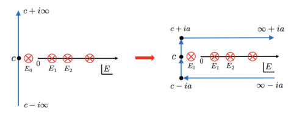
<figcaption class="paper-figure-caption"><b>Fig 1.</b> FIG. 1. The deformation of contour R c+i∞ c−i∞dE into R c−ia ∞−ia + R c c−ia + R c+ia c + R ∞+ia c+ia  dE.</figcaption>
</figure>
<figure class="paper-figure-card">
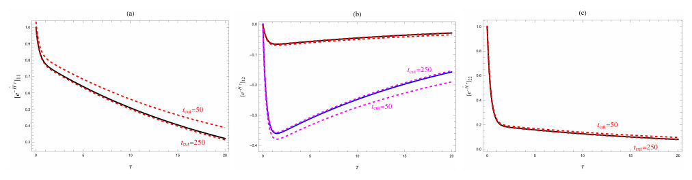
<figcaption class="paper-figure-caption"><b>Fig 2.</b> FIG. 2. Comparison of e−ˆ Hτ (black solid for real part and blue solid for imaginary part) vs the results via analytic continuation from e−i ˆ Ht (red dashed for real part and purple dashed for imaginary part) by Eq.(14) with a 2 × 2 Hamiltonian matrix given</figcaption>
</figure>
<figure class="paper-figure-card">
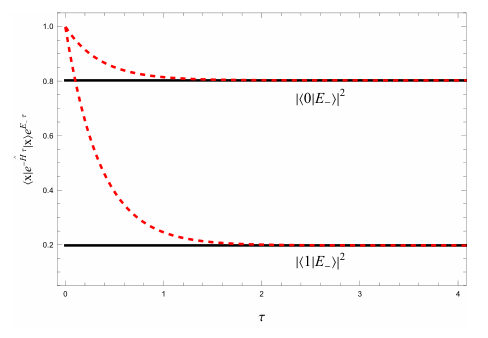
<figcaption class="paper-figure-caption"><b>Fig 3.</b> FIG. 3. Comparison betweens ⟨x|e−ˆ Hτ|x⟩eE−τ via analytic continuation of real-time matrix elements ⟨x|e−i ˆ Ht|x⟩(dashed red) vs. exact results of |⟨x|E−⟩|2 (black solid), where E−, |E−⟩are the ground state energy and eigenvector of ˆH.</figcaption>
</figure>
<figure class="paper-figure-card">
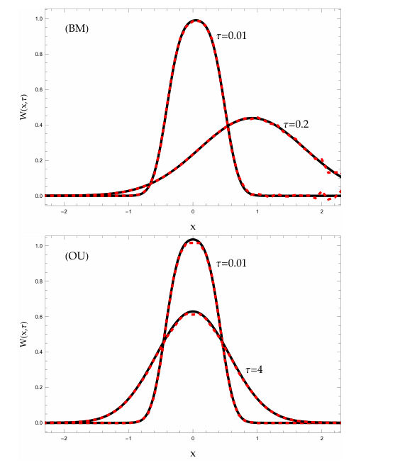
<figcaption class="paper-figure-caption"><b>Fig 4.</b> FIG. 4. Probability distributions W(x, τ) for Brownian mo- tion with a constant drift process (upper panel) and Ornstein- Uhlenbeck Process (lower panel). The exact solutions (solid black) given by Eq.(27) for Brownian motion with a constant drift process and by Eq.(28) for Ornstein-Uhlenbeck Process compared with results (red dashed) by analytical continuation of real-time evolution of e−i ˆ Ht|e Φ</figcaption>
</figure>
<figure class="paper-figure-card">
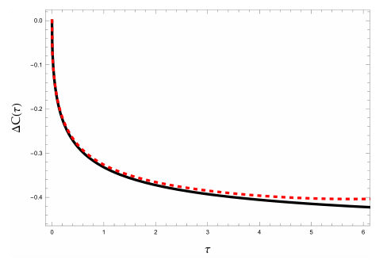
<figcaption class="paper-figure-caption"><b>Fig 5.</b> FIG. 5. ∆C(τ) = C(τ) −C0(τ) with exact solution (solid black) given by Eq.(35) vs. the results (red dashed) by analytical continuation of real-time evolution of ∆C(t) =</figcaption>
</figure>
</div>

<p><strong>Summary.</strong> This paper presents a novel algorithm to compute the imaginary-time evolution of a quantum system by analytically continuing measurable real-time correlation functions. The method is demonstrated on several 1D models, showing it provides accurate results by relating the time evolution operator to spectral properties. It is significant because it offers a pathway to ground state calculations using only real-time quantum simulation data.</p>
<p><strong>Why it may be interesting.</strong> This work provides a powerful, theoretically grounded technique to access imaginary-time dynamics—crucial for finding ground states or thermal properties—using only real-time measurements, which is highly relevant for quantum simulation.</p>
<details>
<summary>Detailed structure</summary>
<p><strong>Main problem.</strong> The paper develops an algorithm to calculate the imaginary-time evolution (ITE) of a quantum system by analytically continuing measurements taken in real time.</p>
<p><strong>Main result.</strong> The method successfully relates ITE to real-time correlation functions, demonstrating excellent agreement with exact solutions for several 1D models.</p>
<p><strong>Method.</strong> The core technique involves performing analytic continuation of contour integrals derived from the Green's function, which is applied to real-time correlation functions.</p>
<p><strong>Model / system.</strong> The method is tested on generic quantum Hamiltonians, specifically applied to 1D systems including Brownian motion, the Ornstein-Uhlenbeck process, and 1D quantum mechanical scattering.</p>
<p><strong>Key observables.</strong> ITE matrix elements $\langle\psi_1|e^{-\hat{H}	au}|\psi_0
angle$, transition probability distributions $P(x, 	au; x', 0)$, and integrated correlation functions.</p>
<p><strong>Important parameters / regimes.</strong> Imaginary time $    au$, real-time cutoff $t_{	ext{cut}}$, and a lower bound $c$ on the ground state energy.</p>
<p><strong>Assumptions / limitations.</strong> The method requires a known lower bound on the ground state energy and relies on approximating integrals by truncating the integration domain in the complex energy plane.</p>
<p><strong>Figures summary.</strong> Figures compare the calculated $\mathrm{e}^{-\hat{H}	au}$ against exact solutions for various Hamiltonians, showing convergence as the real-time cutoff $t_{	ext{cut}}$ is increased.</p>
<p><strong>Paper structure.</strong> The paper first establishes the theoretical framework using contour deformation in the complex energy plane, deriving the relationship between real-time and imaginary-time evolution. It then applies this method to several exactly solvable 1D models, comparing results against known solutions and discussing computational limitations.</p>
</details>
<details>
<summary>Abstract</summary>
<p>Though quantum computing naturally offers an advantage for simulations of real-time quantum systems, implementing Imaginary-Time Evolution (ITE) is comparatively more difficult. Nevertheless, quantum implementations of ITE are useful both in cases where classical implementations have associated sign problems, and also as an exact method of preparing eigenstates on quantum computers. In this work we present an algorithm to obtain ITE of a generic quantum Hamiltonian by performing analytic continuation of measured real-time correlation functions. We present simulations and demonstrations on IBM quantum hardware of 1D Fokker-Planck equations for classical diffusion process and imaginary-time evolution of integrated correlation functions in 1D quantum mechanical scattering as examples to demonstrate the effectiveness of the method.</p>
</details>
<p><sub><a href="#top">↑ back to top</a></sub></p>

<p><a id="paper-2608.19528"></a></p>
<h3 id="physics-based-versus-data-driven-classification-of-single-photon-quantum-emitters-from-sparse-autocorrelation-data"><a href="http://arxiv.org/abs/2608.19528v1">Physics-Based versus Data-Driven Classification of Single-Photon Quantum Emitters from Sparse Autocorrelation Data</a></h3>
<p><strong>Authors:</strong> Nhat Minh Nguyen, Md Shakhawath Hossain, Duc Anh Ngo, Chaohao Chen, Xiaoxue Xu, Toan Trong Tran, Carlo Bradac<br>
<strong>Type:</strong> both · <strong>Category:</strong> other · <strong>PDF:</strong> <a href="https://arxiv.org/pdf/2608.19528v1">https://arxiv.org/pdf/2608.19528v1</a><br>
<strong>Analysis basis:</strong> full PDF text, analyzed in chunks
<strong>Topic relevance:</strong> <code>quantum optics experiment</code> <strong>3/5</strong> · <code>methods for driven-dissipative</code> <strong>2/5</strong> · <code>quantum measurements</code> <strong>2/5</strong> · <code>Full counting statistics</code> <strong>1/5</strong> · <code>Tavis-Cummings &amp; cavity-many-emitter</code> <strong>1/5</strong></p>
<div class="figure-strip-hint">↔ Scroll figures horizontally</div>
<div class="paper-figures-scroll">
<figure class="paper-figure-card">
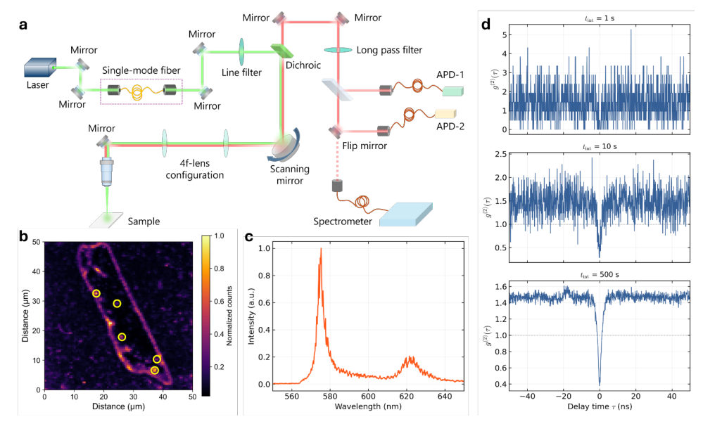
<figcaption class="paper-figure-caption"><b>Fig 1.</b> Figure 1. Experimental setup and measurements. a) Schematic of the experimental setup consisting of a confocal microscope, spectrometer, and Hanbury Brown–Twiss (HBT) interferometer. b) Confocal scan of the hBN flake showing bright emitters (circles). c) Photoluminescence (PL) spectrum of a representative emitter. d) Consecutive second-order autocorrelation measurements acquired with the experimental setup after integration times of 1, 10 and 500 s, illustrating the progressive accumulation of coincidence events.</figcaption>
</figure>
<figure class="paper-figure-card">
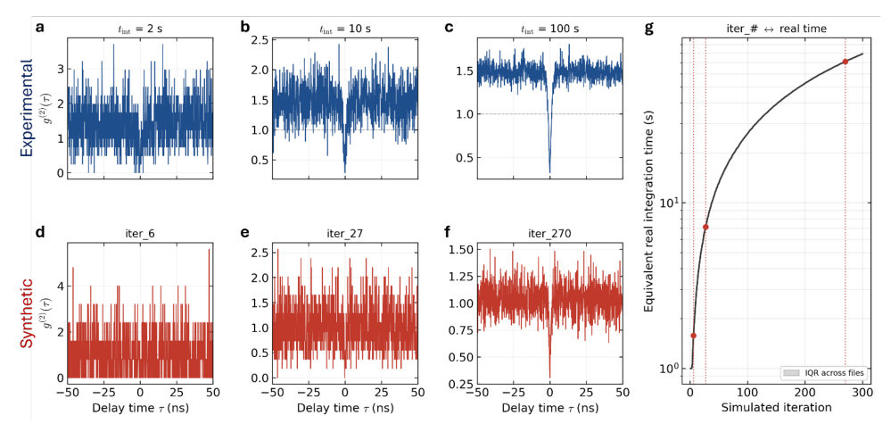
<figcaption class="paper-figure-caption"><b>Fig 2.</b> Figure 2. Correspondence between real experimental integration time and simulated iteration number. a–c) Experimental 𝑔(2)(𝜏) autocorrelation traces from a single-emitter (𝑁= 1) measurement, shown at three integration times (2, 10, and 100 s) spanning the sparse-to-converged range considered in this work. d–f) Synthetic 𝑔(2)(𝜏) traces from a single-emitter chosen with an injected background fraction closely matching the real calibrated value, shown at the three simulated iterations whose baseline count rate corresponds to the real integration times in (a–c), via the mapping in (g). g) Correspondence between simulated iteration number and equivalent real integration time, obtained by...</figcaption>
</figure>
<figure class="paper-figure-card">
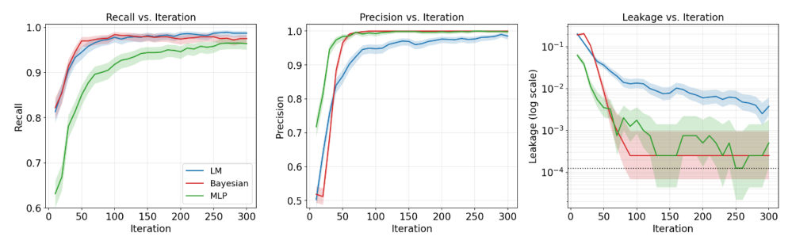
<figcaption class="paper-figure-caption"><b>Fig 3.</b> Figure 3. Recall, precision, and leakage as a function of integration time (iteration), for the Levenberg–Marquardt (LM), Bayesian, and MLP classifiers. Recall and precision axes are truncated to each panel&#x27;s observed data range, rather than the full [0,1] scale, since no method&#x27;s recall or precision falls below ~0.63 or ~0.50, respectively, at any integration time tested. Leakage is shown on a logarithmic scale as its convergence toward zero spans several orders of magnitude. Exact-zero leakage values are floored to half the smallest nonzero leakage value observed in the data, so they render at the bottom edge of the panel rather than being omitted; the black dotted line marks this floor....</figcaption>
</figure>
</div>

<p><strong>Summary.</strong> This paper compares physics-based (Bayesian, LM) and data-driven (NN) machine learning techniques for identifying single-photon emitters from noisy, sparse autocorrelation measurements. By testing these methods on simulated data mimicking real Hanbury Brown-Twiss measurements, the authors conclude that these approaches are complementary, not competitive. The findings offer a roadmap for combining strategies to robustly characterize quantum sources.</p>
<p><strong>Why it may be interesting.</strong> This work provides crucial practical guidance on how to combine advanced statistical inference (Bayesian) with machine learning (NN) for characterizing fundamental quantum sources, which is vital for scaling quantum technologies.</p>
<details>
<summary>Detailed structure</summary>
<p><strong>Main problem.</strong> The core problem is reliably classifying single-photon quantum emitters (SPEs) from large, inhomogeneous populations using sparse second-order autocorrelation data.</p>
<p><strong>Main result.</strong> No single classification method dominates; physics-based and data-driven approaches are complementary, with the Bayesian method offering the fastest convergence while retaining physical interpretability.</p>
<p><strong>Method.</strong> The study benchmarks three methods—Sequential Bayesian Inference, Levenberg-Marquardt fitting, and a Feedforward Neural Network—on synthetic data calibrated against real Hanbury Brown-Twiss measurements.</p>
<p><strong>Model / system.</strong> The system involves characterizing SPEs (e.g., in hBN) by measuring the second-order autocorrelation function, g^(2)(τ), which is sensitive to the emitter number N.</p>
<p><strong>Key observables.</strong> The second-order autocorrelation function, g^(2)(τ), and its value at zero delay, g^(2)(0).</p>
<p><strong>Important parameters / regimes.</strong> Integration time (determining data sparsity), background-to-signal ratio, and the number of emitters N.</p>
<p><strong>Assumptions / limitations.</strong> The analysis relies on generating synthetic data via Monte Carlo simulations calibrated to real experimental noise and background conditions.</p>
<p><strong>Figures summary.</strong> Figure 1 illustrates the experimental setup (HBT interferometer) and shows PL spectra and g^(2)(τ) measurements at various integration times. Other figures compare the performance curves of the different classification algorithms.</p>
<p><strong>Paper structure.</strong> The paper introduces the physical challenge, details the three comparative classification methods (Bayesian, LM, NN), validates them using synthetic data derived from real measurements, and concludes by comparing their performance trade-offs regarding speed, robustness, and interpretability.</p>
</details>
<details>
<summary>Abstract</summary>
<p>Identifying single photon emitters from large, inhomogeneous candidate populations is key to realizing many quantum applications. This requires measuring the emitters second order autocorrelation function, whose statistical reliability is fundamentally limited by acquisition time. Machine learning classifiers can accelerate identification from sparse data, but their performance relative to physics-based inference has not been systematically examined. Here, we introduce sequential Bayesian inference for single photon emitter classification and benchmark it against Levenberg-Marquardt fitting and a feedforward neural network. We use synthetic training and test data calibrated against real Hanbury Brown-Twiss measurements from hexagonal boron nitride emitters, enabling evaluation against an exactly known ground-truth emitter number under realistic noise and background conditions. All three approaches achieve high, near-perfect accuracy with sufficient integration time, but differ greatly in convergence rate and robustness under sparse photon statistics. The neural network is most robust at short integration times. The Bayesian classifier reaches near-perfect accuracy fastest, while retaining full physical interpretability. Levenberg-Marquardt fitting remains a valuable, fully interpretable method, achieving the highest recall despite being the slowest to converge. These results lead to several key conclusions. No single method dominates across all performance metrics. Relying on any one metric alone can give a misleading picture of classifier performance, particularly under sparse photon statistics. Physics-based and data-driven methods are complementary rather than competing approaches. Together, these findings provide practical guidance for selecting and combining classification strategies for scalable single-photon-source screening and other quantum-emitter characterization tasks.</p>
</details>
<p><sub><a href="#top">↑ back to top</a></sub></p>

<p><a id="paper-2608.19582"></a></p>
<h3 id="physics-guided-machine-learning-for-sim-to-real-calibration-of-nv-diamond-magnetometers"><a href="http://arxiv.org/abs/2608.19582v1">Physics-guided machine learning for sim-to-real calibration of NV diamond magnetometers</a></h3>
<p><strong>Authors:</strong> Jonathan Daniel, Martin Y. Kim, Jesse Hernandez, Emanuel Suarez, Sangwoo Lee, Jinhee Lee, Je-Hyung Kim<br>
<strong>Type:</strong> both · <strong>Category:</strong> disordered systems and neural networks · <strong>PDF:</strong> <a href="https://arxiv.org/pdf/2608.19582v1">https://arxiv.org/pdf/2608.19582v1</a><br>
<strong>Analysis basis:</strong> full PDF text, analyzed in chunks
<strong>Topic relevance:</strong> <code>QC/QI experiment</code> <strong>3/5</strong> · <code>methods for driven-dissipative</code> <strong>2/5</strong> · <code>quantum measurements</code> <strong>2/5</strong> · <code>analog quantum simulation</code> <strong>1/5</strong> · <code>quantum optics experiment</code> <strong>1/5</strong></p>
<div class="figure-strip-hint">↔ Scroll figures horizontally</div>
<div class="paper-figures-scroll">
<figure class="paper-figure-card">
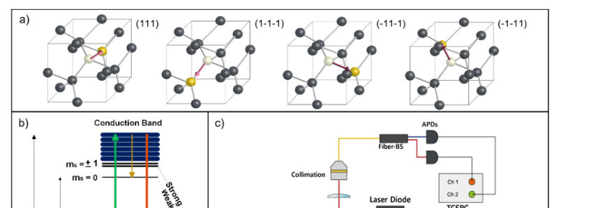
<figcaption class="paper-figure-caption"><b>Fig 1.</b> Figure 1: NV Center four-axis crystallography, energy diagram and ODMR experimental setup. (a) Atomic structure of the NV center in the diamond lattice, showing four crystallographic NV orientations. (b) Energy diagram of NV- center (c) ODMR Experimental setup.</figcaption>
</figure>
<figure class="paper-figure-card">
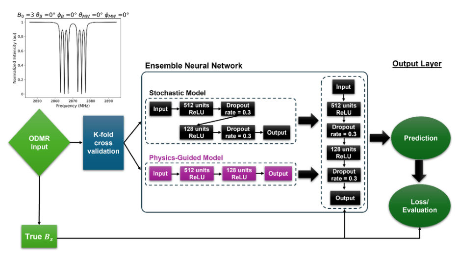
<figcaption class="paper-figure-caption"><b>Fig 2.</b> Figure 2: Structural Architecture and workflow. The pipeline takes a simulated cw ODMR spectrum as an input array and processes it alongside the true longitudinal magnetic field (Bz). The dataset undergoes a K-fold cross- validation branching into stochastic and physics-guided model. The outputs of the two models are fed into another layer of stochastic model forming an ensemble neural network, yielding the final outputs.</figcaption>
</figure>
<figure class="paper-figure-card">
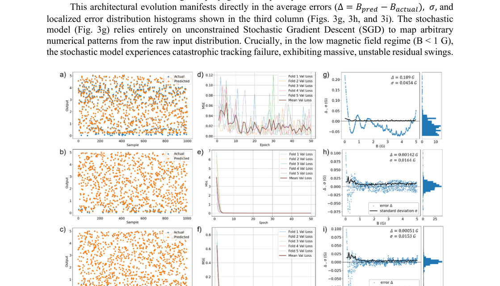
<figcaption class="paper-figure-caption"><b>Fig 3.</b> FIGURE 3: Quantitative comparison of performance and average error distributions across the three evaluated network architectures: stochastic (top row), physics-guided (middle row), and ensemble model (bottom row). (a) - (c) Actual-versus-predicted output scatter plots mapped over 1,000 independent evaluation samples. (d) - (f) Mean squared error (MSE) optimization profiles tracking validation loss across a 5-fold cross-validation split over 50 training epochs. (g), (h), (i) Average error and standard deviations 𝜎 plotted as a function of the magnetic field, paired with localized error frequency histograms.</figcaption>
</figure>
<figure class="paper-figure-card">
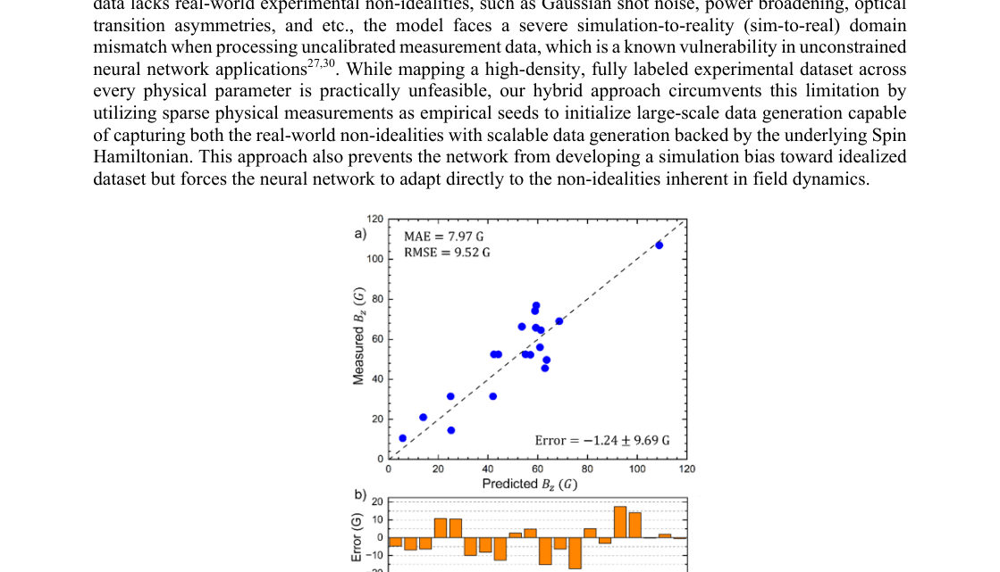
<figcaption class="paper-figure-caption"><b>Fig 4.</b> Figure 4: Experimental validation of the hybrid model evaluated across 20 raw experimental ODMR spectra. (a) Parity plot comparing predicted vs. measured longitudinal magnetic field (𝐵௭ሻ. The dashed line indicates an ideal agreement (b) Individual residual prediction errors plotted by sample number.</figcaption>
</figure>
</div>

<p><strong>Summary.</strong> The paper presents a novel physics-guided hybrid machine learning framework to solve the calibration challenge in NV diamond magnetometers. By embedding known physical laws, the model overcomes the limitations of purely data-driven approaches, achieving dramatic improvements in magnetic field measurement precision. This methodology establishes a general paradigm for building self-calibrating AI tools for other data-scarce physical systems.</p>
<p><strong>Why it may be interesting.</strong> This work provides a concrete methodology for integrating fundamental physical constraints (like Hamiltonian terms) into data-driven models, which is highly relevant for developing robust quantum sensing and characterization tools.</p>
<details>
<summary>Detailed structure</summary>
<p><strong>Main problem.</strong> Deploying NV diamond magnetometers in unshielded environments requires self-calibration, which is bottlenecked by data scarcity and the simulation-to-reality mismatch.</p>
<p><strong>Main result.</strong> The physics-guided hybrid ML framework achieved a 372-fold precision improvement over purely statistical baselines, enabling exceptional predictive accuracy on raw experimental data.</p>
<p><strong>Method.</strong> The authors developed a hybrid machine learning framework that embeds the deterministic Zeeman splitting relationship directly into the neural network architecture, combining sparse physical measurements with scalable synthetic data generation.</p>
<p><strong>Model / system.</strong> The system utilizes ensemble Nitrogen-Vacancy (NV) centers in diamond for vector magnetometry, governed by a spin Hamiltonian. Measurements are performed via Optically Detected Magnetic Resonance (ODMR) spectroscopy.</p>
<p><strong>Key observables.</strong> ODMR spectrum (fluorescence intensity dip), scalar magnetic field vector (B).</p>
<p><strong>Important parameters / regimes.</strong> Sub-nT sensitivity; Zeeman splitting ($\Delta
u \propto B_{\parallel}$); $\gamma_e = 28 	ext{ GHz/T}$.</p>
<p><strong>Assumptions / limitations.</strong> The method assumes that physical laws (like the Zeeman splitting) can be deterministically embedded as constraints into the ML training pipeline to overcome data limitations.</p>
<p><strong>Figures summary.</strong> Figures illustrate the NV center setup, the hybrid pipeline architecture, and performance comparisons showing the massive error reduction achieved by the physics-guided model over purely stochastic baselines, including validation on raw experimental spectra.</p>
<p><strong>Paper structure.</strong> The paper introduces the physical problem (NV magnetometry calibration), details the limitations of conventional ML, proposes the physics-guided hybrid ML framework, validates it first on synthetic data, and finally demonstrates its success on raw, uncalibrated experimental data.</p>
</details>
<details>
<summary>Abstract</summary>
<p>Ensemble nitrogen-vacancy (NV) centers in diamond enable robust vector magnetometry in unshielded environments, yet deployment remains bottlenecked by complex calibration and a reliance on external data references. Conventional statistical machine learning requires an exorbitantly large volume of training data and suffers from severe simulation-to-reality mismatches. To address this, we introduce a physics-guided hybrid machine learning framework that embeds the Zeeman splitting directly into the learning pipeline. Our physics-guided model significantly reduces the average tracking error demonstrating a 372-fold precision improvement over purely statistical baselines. Furthermore, our hybrid architecture pairs a sparse physical measurement with scalable synthetic data generation, seamlessly incorporating real-world hardware non-idealities. When deployed to decode uncalibrated, raw experimental ODMR data, our framework delivers exceptional predictive accuracy for the scalar magnetic field. This work paves the way toward self-calibrated sensors while establishing a machine learning training method applicable to other data-scarce physical systems</p>
</details>
<p><sub><a href="#top">↑ back to top</a></sub></p>

<p><a id="paper-2608.19391"></a></p>
<h3 id="state-convertibility-and-fluctuation-theorems-from-a-dynamical-reference-majorization-meets-martingales"><a href="http://arxiv.org/abs/2608.19391v1">State convertibility and fluctuation theorems from a dynamical reference: majorization meets martingales</a></h3>
<p><strong>Authors:</strong> Davide Cugini, Giacomo Guarnieri<br>
<strong>Type:</strong> theory · <strong>Category:</strong> statistical mechanics · <strong>PDF:</strong> <a href="https://arxiv.org/pdf/2608.19391v1">https://arxiv.org/pdf/2608.19391v1</a><br>
<strong>Analysis basis:</strong> full PDF text, analyzed in chunks
<strong>Topic relevance:</strong> <code>non-equilibrium universality</code> <strong>3/5</strong> · <code>Keldysh / 2PI / non-Gaussian methods</code> <strong>1/5</strong> · <code>analog quantum simulation</code> <strong>1/5</strong> · <code>correlated / nonlocal dissipation</code> <strong>1/5</strong> · <code>driven-dissipative phase transition</code> <strong>1/5</strong> · <code>methods for driven-dissipative</code> <strong>1/5</strong> · <code>quantum measurements</code> <strong>1/5</strong></p>
<div class="figure-strip-hint">↔ Scroll figures horizontally</div>
<div class="paper-figures-scroll">
<figure class="paper-figure-card">
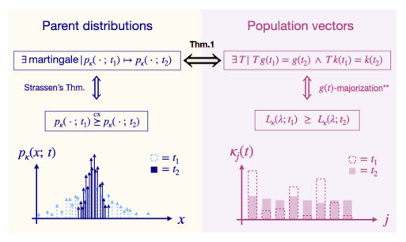
<figcaption class="paper-figure-caption"><b>Fig 1.</b> FIG. 1. Schematic of the framework equivalence demon- strated in this paper. A population vector k(t), compared against a reference g(t), is mapped to the parent distribution pκ(·; t) of its relative populations κj(t) = kj(t)/gj(t). State convertibility (1) and the g(t)-majorization criterion (∗∗see End Matter (16)) on the right side (purple background) are shown to be fully equivalent to each other and to the exis- tence of a martingale coupling between the respective parent distributions (Theorem 1) and finally, by virtue of Strassen’s Theorem, to convex order relation (6) (left hand side).</figcaption>
</figure>
<figure class="paper-figure-card">
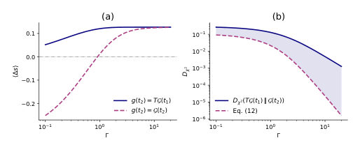
<figcaption class="paper-figure-caption"><b>Fig 2.</b> FIG. 2. Driven two-level system, with linearly decreasing en- ergy gap ϵ(t) = ϵ0 +(ϵ1 −ϵ0)t, ϵ0 = 2, ϵ1 = 1/2. Furthermore, we choose the temperature β = 1 and the initial distribu- tion k(t1) = (1, 0), i.e. the ground state; finally, without loss of generality (one could always rescale the rate Γ to en- sure this condition), we simply set the initial time t1 = 0 and the final time t2 = 1. a) Mean reference-relative en- tropy production ⟨∆s⟩versus relaxation rate Γ (adiabatic- ity increasing to the right), for the true propagated reference g(t2) = TG(t1) (solid) and for the instantaneous Gibbs ref- erence G(t2) (dashed). The former obeys the second law ex- actly; the latter shows an...</figcaption>
</figure>
</div>

<p><strong>Summary.</strong> This paper develops a generalized mathematical framework to analyze state convertibility and fluctuation theorems relative to any arbitrary reference state. It establishes that resource constraints are equivalent to a martingale condition on relative populations, and crucially, it shows that measuring the violation of the associated fluctuation theorem provides a quantitative, model-independent lower bound on how much the assumed reference dynamics deviates from the true dynamics.</p>
<p><strong>Why it may be interesting.</strong> This work provides a powerful, general mathematical framework for non-equilibrium thermodynamics, connecting fundamental concepts like resource constraints (convertibility) directly to measurable statistical quantities (fluctuation theorems) in a model-independent way.</p>
<details>
<summary>Detailed structure</summary>
<p><strong>Main problem.</strong> The paper unifies and extends the concepts of state convertibility and fluctuation theorems to arbitrary, time-dependent reference distributions, moving beyond fixed equilibrium states.</p>
<p><strong>Main result.</strong> State convertibility is shown to be equivalent to a one-dimensional convex-order condition, which is further linked to the existence of a martingale coupling. Moreover, the violation of the derived fluctuation theorem provides a model-independent lower bound on the mismatch between the true and assumed reference dynamics.</p>
<p><strong>Method.</strong> The authors employ mathematical tools from martingale theory and convex order theory to translate classical concepts like majorization into a tractable, one-dimensional comparison of relative population distributions.</p>
<p><strong>Model / system.</strong> The framework is applied to general stochastic processes involving population vectors $k(t)$ over microstates, and specifically illustrated using a driven two-level system interacting with a thermal bath.</p>
<p><strong>Key observables.</strong> Relative population vector $\kappa_j(t) = k_j(t)/g_j(t)$, reference-relative entropy production $\Delta s$, and the $\chi^2$-divergence between reference states.</p>
<p><strong>Important parameters / regimes.</strong> Time-dependent reference distribution $g(t)$, inverse temperature $eta$, and the energy gap $\epsilon(t)$ (in the specific example).</p>
<p><strong>Assumptions / limitations.</strong> The initial classical criteria are tied to fixed, equilibrium references, which the new framework generalizes. The diagnostic relies on observing the fluctuation theorem violation.</p>
<p><strong>Figures summary.</strong> Figure 1 schematically summarizes the equivalence chain: Population vector $
ightarrow$ Parent distribution $
ightarrow$ Martingale coupling $
ightarrow$ Convex order relation. Figure 2 illustrates the two-level system, comparing $\langle\Delta s
angle$ and showing the measured fluctuation violation bounds the $\chi^2$ divergence.</p>
<p><strong>Paper structure.</strong> The paper builds by first unifying majorization/thermo-majorization via $g(t)$-majorization, then establishing the equivalence to a martingale condition (Theorem 1), and finally deriving a generalized fluctuation theorem (Theorem 2) whose violation yields a model-independent diagnostic for reference error (Theorem 3).</p>
</details>
<details>
<summary>Abstract</summary>
<p>State convertibility represents a fundamental concept used to determine whether a transformation is possible given a specific set of resources. Within the field of Thermodynamics, where physical process are required to preserve a reference state typically in microcanonical or canonical form, this translates into the notions of majorization and thermo-majorization ---criteria that require constructing and comparing state-dependent Lorenz curves. In this work, we firstly unify and extend these notions to an arbitrary and possibly time-dependent reference distribution $g(t)$, introducing the concept of $g(t)$-majorization; we then introduce a dual picture whereby state convertibility is turned into a one-dimensional convex-order problem, which allows us to demonstrate that a transition is admissible if and only if the associated real-valued distributions of relative populations $ k_j(t)/g_j(t)$ are connected by a martingale. Building on it, we then derive an exact fluctuation theorem for a reference-relative entropy production whose average violation certifies, through a $χ^{2}$-divergence bound, the mismatch between an assumed and the true reference evolution---a model-independent diagnostic that requires no independent characterization of the latter and turns an observed breakdown of the fluctuation relation into a certified lower bound on the reference error.</p>
</details>
<p><sub><a href="#top">↑ back to top</a></sub></p>

<p><a id="paper-2608.20140"></a></p>
<h3 id="vacuum-viscosity-and-relativistic-inertia-motion-of-a-massive-object-with-charged-internal-degrees-of-freedom-interacting-with-a-classical-field"><a href="http://arxiv.org/abs/2608.20140v1">Vacuum viscosity and relativistic inertia: Motion of a massive object with charged internal degrees of freedom interacting with a classical field</a></h3>
<p><strong>Authors:</strong> Jen-Tsung Hsiang, Bei-Lok Hu<br>
<strong>Type:</strong> theory · <strong>Category:</strong> other · <strong>PDF:</strong> <a href="https://arxiv.org/pdf/2608.20140v1">https://arxiv.org/pdf/2608.20140v1</a><br>
<strong>Analysis basis:</strong> full PDF text, analyzed in chunks
<strong>Topic relevance:</strong> <code>Keldysh / 2PI / non-Gaussian methods</code> <strong>3/5</strong> · <code>correlated / nonlocal dissipation</code> <strong>2/5</strong> · <code>methods for driven-dissipative</code> <strong>2/5</strong> · <code>quantum measurements</code> <strong>2/5</strong></p>
<div class="figure-strip-hint">↔ Scroll figures horizontally</div>
<div class="paper-figures-scroll">
<figure class="paper-figure-card">
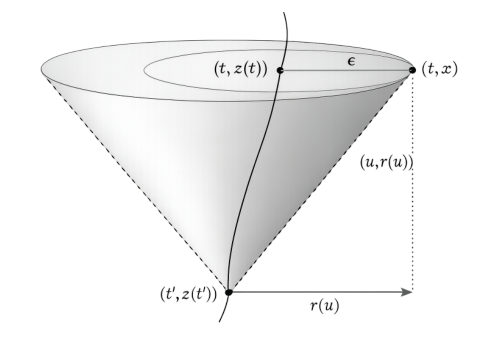
<figcaption class="paper-figure-caption"><b>Fig 1.</b> FIG. 1. Spacetime diagram illustrating the future lightcone of z(t′) intersecting a regularizing sphere of</figcaption>
</figure>
</div>

<p><strong>Summary.</strong> This theoretical paper examines the vacuum viscosity experienced by a charged object moving through a classical field. It finds a conflict between nonrelativistic and relativistic treatments, concluding that the nonrelativistic approach is flawed. The resolution enriches classical mechanics by enforcing special relativity constraints on the object's dynamics.</p>
<p><strong>Why it may be interesting.</strong> It provides a deep theoretical insight into the necessity of maintaining relativistic covariance when modeling dissipative or inertial effects in quantum-field-matter interactions, which is crucial for advanced open quantum systems modeling.</p>
<details>
<summary>Detailed structure</summary>
<p><strong>Main problem.</strong> The paper investigates whether a massive object with charged internal degrees of freedom experiences a viscous force (vacuum viscosity) when interacting with a classical field.</p>
<p><strong>Main result.</strong> A nonrelativistic calculation suggests the existence of a viscous force, but a fully relativistic covariant calculation proves this force does not exist, leading to enriched forms of Newton's laws.</p>
<p><strong>Method.</strong> The authors employ both nonrelativistic and fully relativistic covariant calculations, utilizing a microphysics model for optomechanics and advanced regularization techniques (Pauli-Villars) for self-force calculations.</p>
<p><strong>Model / system.</strong> The system consists of a massive object (M) with charged internal degrees of freedom ($\chi$) interacting with a free, unbounded classical scalar field ($\phi$). The dynamics are governed by a tripartite interaction Hamiltonian.</p>
<p><strong>Key observables.</strong> Viscous force, equations of motion for $z(t)$ and $\chi(t)$, and the self-field gradient $\partial_\mu \phi_{	ext{reg}}$.</p>
<p><strong>Important parameters / regimes.</strong> Zero temperature, the charge $\lambda$, and the mass $M$ of the object.</p>
<p><strong>Assumptions / limitations.</strong> The study assumes a classical field ($\phi$) and zero temperature, contrasting with full quantum vacuum fluctuations.</p>
<p><strong>Paper structure.</strong> The paper progresses by first establishing the motivation from cosmological and quantum friction analogs, then performing a nonrelativistic calculation that yields a result, followed by a rigorous relativistic covariant calculation that resolves the conflict by identifying the failure of the nonrelativistic approximation.</p>
</details>
<details>
<summary>Abstract</summary>
<p>Our present investigation into a rather rudimentary problem is motivated by two classes of problems studied since the 70's, cosmological particle creation and its more accessible analog, the dynamical Casimir effect on the one hand, and quantum friction a neutral atom moving along a dielectric surface would experience, on the other. The backreaction effects of produced particles being able to isotropize the expansion of the universe, or to slow down the moving mirror can be understood via the concept of vacuum viscosity arising from fluctuations of the quantum field. We want to track down the origin of this effect by asking the question whether a moving massive $M$ object with a charged internal degrees of freedom $χ$ interacting with a free unbounded classical field $φ$ at zero temperature would experience a viscous force, similar to the said precedents. Adopting a microphysics model for optomechanics which can treat the unequal tripartite $χ$-$φ$-$M$ interactions, we first perform a nonrelativistic calculation, which seems perfectly legitimate considering the needs of atomic physics, and found the answer to be yes, but a relativistic covariant calculation says no. We identify where the nonrelativistic framework is defective. The resolution of this latent yet real conflict is technically nontrivial but physically quite inspirational. It results in added enriched contents to Newton's first and second laws when the principles of special relativity are enforced, and rules to follow to get the correct nonrelativistic answer</p>
</details>
<p><sub><a href="#top">↑ back to top</a></sub></p>

<p><a id="paper-2608.20132"></a></p>
<h3 id="sake-spectral-autodiff-kernel-expansion-for-geometric-liouvillian-transport-a-differential-geometric-framework-for-response-transport-in-quantum-dynamical-systems"><a href="http://arxiv.org/abs/2608.20132v1">SAKE: Spectral Autodiff Kernel Expansion for Geometric Liouvillian Transport. A Differential-Geometric Framework for Response Transport in Quantum Dynamical Systems</a></h3>
<p><strong>Authors:</strong> Eric R. Bittner, Carlos Silva-Acuna, Hao Li, Simon Paiva-Ortega<br>
<strong>Type:</strong> theory · <strong>Category:</strong> other · <strong>PDF:</strong> <a href="https://arxiv.org/pdf/2608.20132v1">https://arxiv.org/pdf/2608.20132v1</a><br>
<strong>Analysis basis:</strong> full PDF text, analyzed in chunks
<strong>Topic relevance:</strong> <code>methods for driven-dissipative</code> <strong>3/5</strong> · <code>Keldysh / 2PI / non-Gaussian methods</code> <strong>1/5</strong> · <code>analog quantum simulation</code> <strong>1/5</strong> · <code>correlated / nonlocal dissipation</code> <strong>1/5</strong> · <code>driven-dissipative phase transition</code> <strong>1/5</strong> · <code>quantum measurements</code> <strong>1/5</strong></p>
<div class="figure-strip-hint">↔ Scroll figures horizontally</div>
<div class="paper-figures-scroll">
<figure class="paper-figure-card">
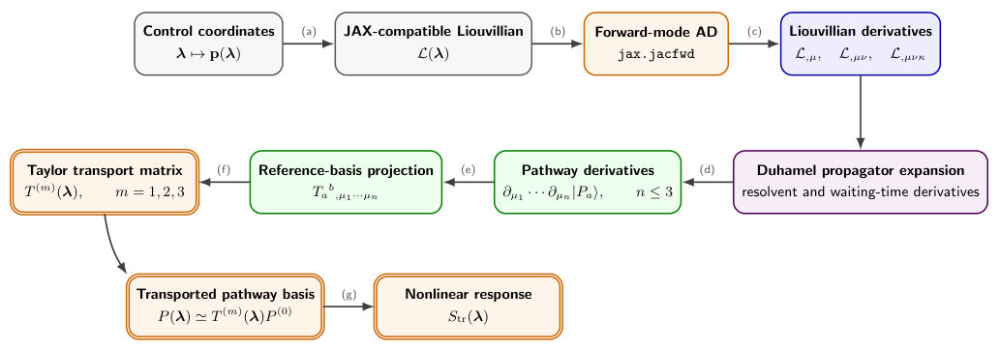
<figcaption class="paper-figure-caption"><b>Fig 1.</b> FIG. 1. Implemented SAKE-DT workflow for local Liouvillian transport. Dimensionless control coordinates are first mapped to the physical model parameters, from which the JAX-compatible Liouvillian L(λ) is constructed. The labeled transitions indicate the successive computational operations: (a) mapping the dimensionless control coordinates to the physical model parameters; (b) forward-mode automatic differentiation of the parameter-dependent Liouvillian; (c) construction of the first-, second-, and third-order Liouvillian derivative tensors; (d) Duhamel assembly of the resolvent and waiting-time propagator derivatives; (e) projection of the resulting pathway derivatives onto the reference...</figcaption>
</figure>
<figure class="paper-figure-card">
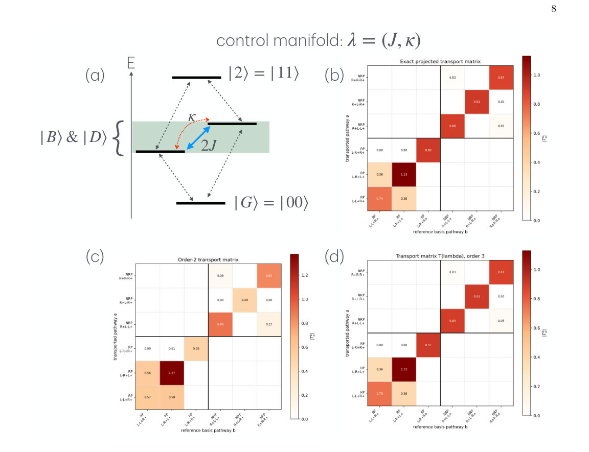
<figcaption class="paper-figure-caption"><b>Fig 2.</b> FIG. 2. Validation of the Spectral Autodiff Kernel Expansion (SAKE) for the su(2) × su(2) excitonic dimer. (a) Energy-level diagram of the model system. The control manifold is parameterized by the coherent excitonic coupling J, which mixes the site-basis states |10⟩and |01⟩, and the incoherent population-transfer rate κ, which couples the same states through the dissipative Liouvillian. The ground and double-excited states are denoted |G⟩= |00⟩and |2⟩= |11⟩, while the intermediate exciton states |B⟩and |D⟩are the bright and dark superpositions of |10⟩and |01⟩, respectively. (b)Targeted projected pathway transport matrix Ta b obtained by directly evaluating the response at a representative...</figcaption>
</figure>
<figure class="paper-figure-card">
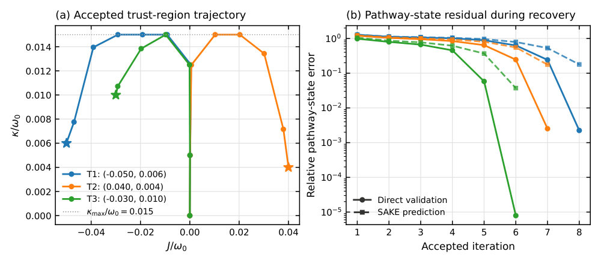
<figcaption class="paper-figure-caption"><b>Fig 3.</b> FIG. 3. Iterative inverse recovery with local SAKE charts. (a) Accepted trust-region trajectories in the dimensionless control plane (J/ω0, κ/ω0). Stars mark the synthetic targets and the dotted line denotes the imposed dissipative-coupling bound. (b) Relative pathway-state residual versus accepted iteration. Solid lines are direct-inversion validations and dashed lines are the corresponding third-order SAKE predictions. All calculations begin at the uncoupled reference.</figcaption>
</figure>
<figure class="paper-figure-card">
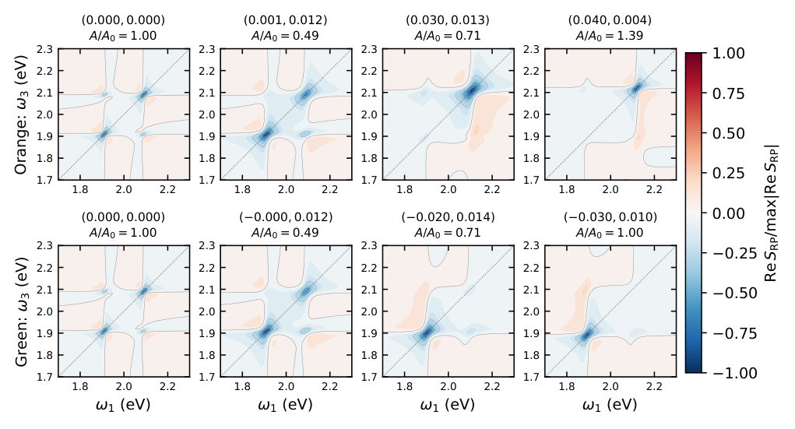
<figcaption class="paper-figure-caption"><b>Fig 4.</b> FIG. 4. Evolution of the rephasing spectrum during iterative recovery. Direct rephasing spectra on a 64 × 64 frequency grid at four accepted chart centers along the positive-J (orange, upper row) and mixed (green, lower row) trajectories. Coordinates above each panel are (J/ω0, κ/ω0); A/A0 gives the maximum absolute real amplitude relative to the uncoupled spectrum. The plotted signal in each panel is divided by its own maximum to expose changes in line shape.</figcaption>
</figure>
<figure class="paper-figure-card">
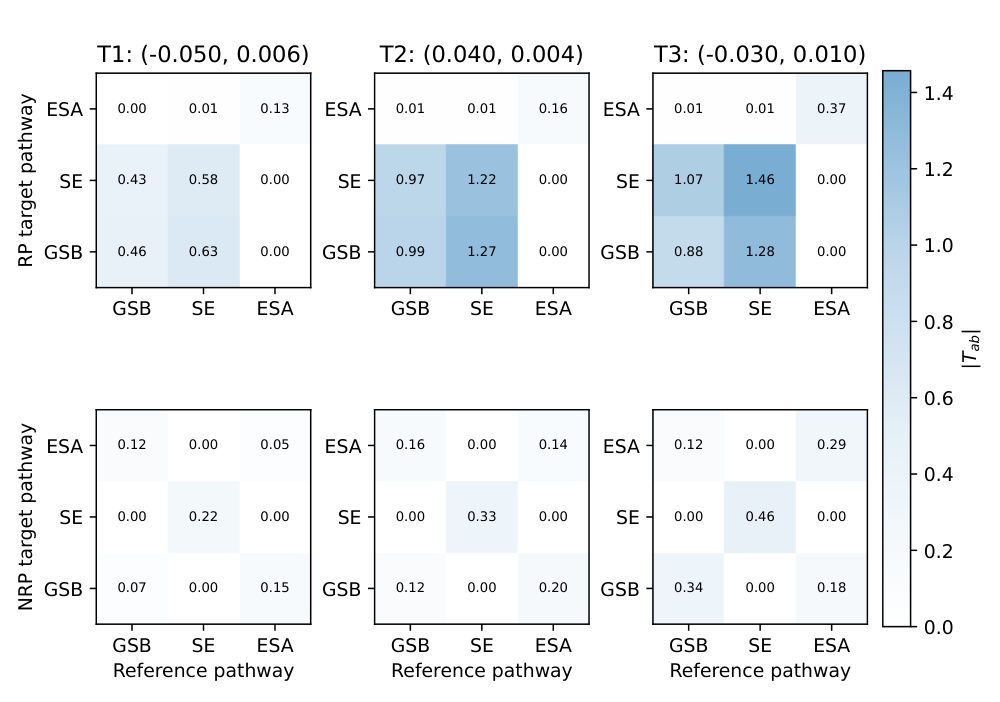
<figcaption class="paper-figure-caption"><b>Fig 5.</b> FIG. 5. Initial-to-target mixing of retained RP and NRP pathways. The 3 × 3 RP (upper row) and NRP (lower row) blocks of the global transport matrix for the three synthetic targets. Color and the numerical annotation in each cell give the magnitude |Tab|. Rows identify the target pathway and columns the zeroth-order reference pathway; GSB, SE, and ESA denote ground-state bleach, stimulated emission, and excited-state absorption, respectively. A common color scale is used for both sectors and all targets.</figcaption>
</figure>
</div>

<p><strong>Summary.</strong> This paper introduces SAKE, a novel, differentiable computational framework that uses automatic differentiation and Duhamel theory to efficiently calculate how nonlinear spectroscopic responses change across neighboring quantum models. By constructing a pathway transport operator, the method reveals underlying mechanistic information about amplitude redistribution in quantum dynamics. This greatly enhances the feasibility of local parameter exploration and inverse design in quantum optics.</p>
<p><strong>Why it may be interesting.</strong> This work provides a powerful, automated tool for analyzing open quantum systems dynamics, allowing researchers to perform local parameter exploration and sensitivity analysis on complex spectroscopic measurements without prohibitive computational costs.</p>
<details>
<summary>Detailed structure</summary>
<p><strong>Main problem.</strong> The paper addresses the need for an efficient, differentiable method to calculate and transport nonlinear spectroscopic response between neighboring quantum dynamical models.</p>
<p><strong>Main result.</strong> The Spectral Autodiff Kernel Expansion (SAKE) framework successfully constructs a pathway transport operator that accurately maps nonlinear response from a reference model to neighboring systems, revealing mechanistic details hidden in the spectrum.</p>
<p><strong>Method.</strong> It combines forward-mode automatic differentiation with Duhamel transport theory to generate and assemble high-order derivatives of the Liouvillian superoperator, avoiding independent recomputation for each parameter point.</p>
<p><strong>Model / system.</strong> The framework is applied to quantum dynamical systems, specifically validated using a four-level excitonic dimer exhibiting su(2) x su(2) symmetry, governed by a Liouvillian superoperator.</p>
<p><strong>Key observables.</strong> Nonlinear spectroscopic response (rephasing spectrum) and the pathway transport operator, which quantifies amplitude redistribution among Feynman pathways.</p>
<p><strong>Important parameters / regimes.</strong> The order of the Taylor expansion (up to third order) and the control coordinates defining the path in parameter space.</p>
<p><strong>Assumptions / limitations.</strong> The model parameters map smoothly to the Liouvillian, and the entire process can be represented as a differentiable computational graph.</p>
<p><strong>Figures summary.</strong> Figures illustrate the SAKE-DT workflow, showing the sequence from Liouvillian construction to the final observable response via AD and Duhamel assembly, and show reconstructed spectra and transport blocks.</p>
<p><strong>Paper structure.</strong> The paper introduces SAKE, details the combination of AD and Duhamel theory to build the transport operator, validates the method on an excitonic dimer, and discusses the physical interpretation of the resulting transport coefficients.</p>
</details>
<details>
<summary>Abstract</summary>
<p>We introduce the Spectral Autodiff Kernel Expansion (SAKE), a differentiable computational framework for transporting nonlinear spectroscopic response between neighboring quantum dynamical models. Rather than recomputing multidimensional spectra independently for each Hamiltonian or Liouvillian, SAKE constructs local transport expansions about a reference model by combining forward-mode automatic differentiation with Duhamel transport theory. Automatic differentiation generates first-, second-, and third-order derivatives of the parameter-dependent Liouvillian, which are assembled into a pathway transport operator that maps the nonlinear response of a reference model onto neighboring systems. The framework is validated for a four-level excitonic dimer possessing an $su(2)\times su(2)$ symmetry by comparing second- and third-order transported pathway operators with exact projected transport matrices obtained from direct calculations. The third-order expansion accurately reproduces the projected transport operator and its associated pathway mixing. Beyond providing an efficient computational strategy, the transport operator reveals how coherent and dissipative perturbations redistribute amplitude among double-sided Feynman pathways, exposing mechanistic information that is not directly apparent from the nonlinear spectrum. SAKE thereby establishes a differentiable computational framework for nonlinear spectroscopy that supports efficient local parameter exploration, sensitivity analysis, and future inverse-design applications.</p>
</details>
<p><sub><a href="#top">↑ back to top</a></sub></p>

<p><a id="paper-2608.19325"></a></p>
<h3 id="statistical-mechanics-of-non-abelian-learnability-transitions"><a href="http://arxiv.org/abs/2608.19325v1">Statistical Mechanics of Non-Abelian Learnability Transitions</a></h3>
<p><strong>Authors:</strong> Ruochen Ma, Romain Vasseur<br>
<strong>Type:</strong> theory · <strong>Category:</strong> statistical mechanics · <strong>PDF:</strong> <a href="https://arxiv.org/pdf/2608.19325v1">https://arxiv.org/pdf/2608.19325v1</a><br>
<strong>Analysis basis:</strong> full PDF text, analyzed in chunks
<strong>Topic relevance:</strong> <code>quantum measurements</code> <strong>3/5</strong> · <code>Keldysh / 2PI / non-Gaussian methods</code> <strong>1/5</strong> · <code>analog quantum simulation</code> <strong>1/5</strong> · <code>driven-dissipative phase transition</code> <strong>1/5</strong> · <code>methods for driven-dissipative</code> <strong>1/5</strong> · <code>non-equilibrium universality</code> <strong>1/5</strong></p>
<div class="figure-strip-hint">↔ Scroll figures horizontally</div>
<div class="paper-figures-scroll">
<figure class="paper-figure-card">
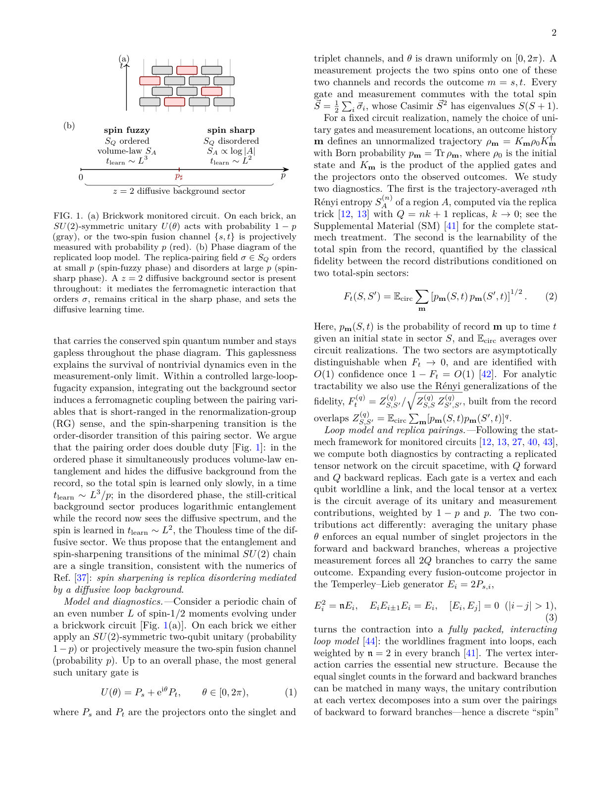
<figcaption class="paper-figure-caption"><b>Fig 1.</b> Low-resolution page preview, page 2</figcaption>
</figure>
<figure class="paper-figure-card">
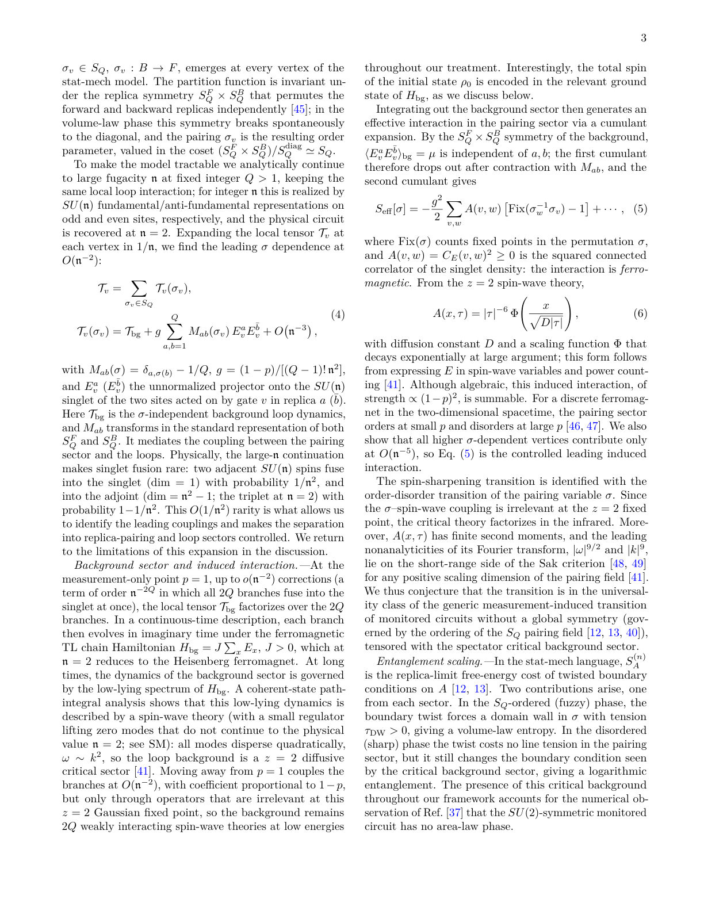
<figcaption class="paper-figure-caption"><b>Fig 2.</b> Low-resolution page preview, page 3</figcaption>
</figure>
<figure class="paper-figure-card">
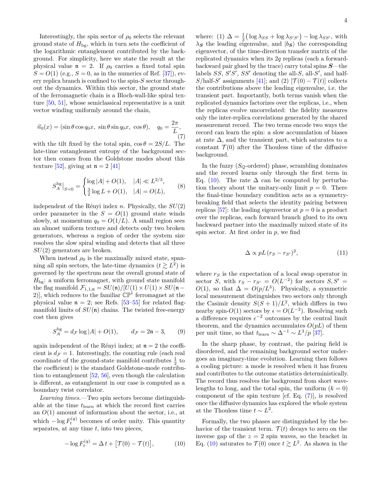
<figcaption class="paper-figure-caption"><b>Fig 3.</b> Low-resolution page preview, page 4</figcaption>
</figure>
<figure class="paper-figure-card">
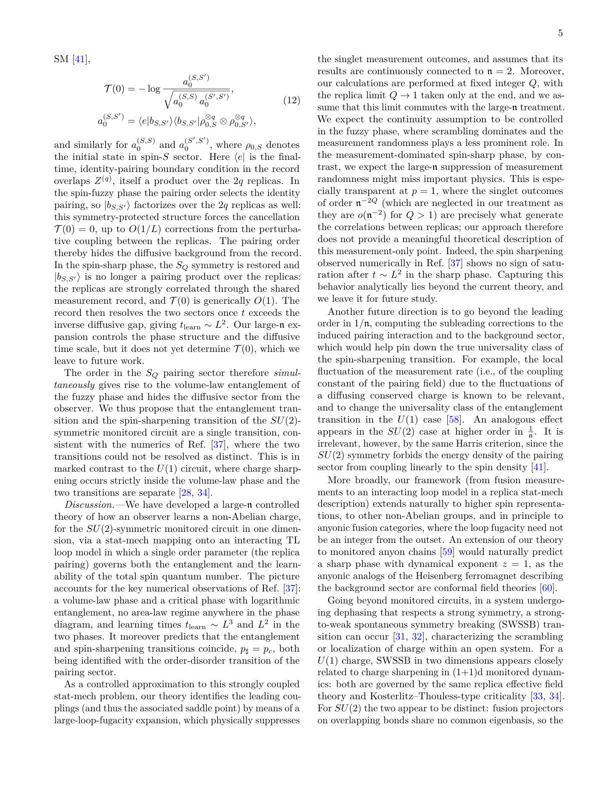
<figcaption class="paper-figure-caption"><b>Fig 4.</b> Low-resolution page preview, page 5</figcaption>
</figure>
<figure class="paper-figure-card">
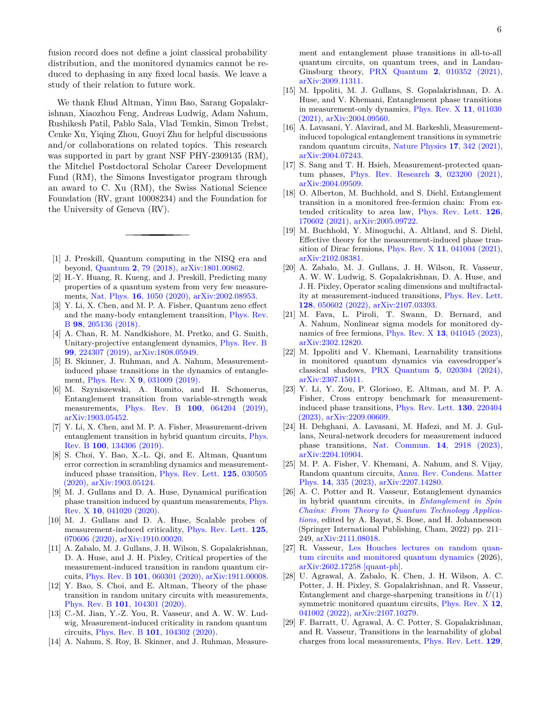
<figcaption class="paper-figure-caption"><b>Fig 5.</b> Low-resolution page preview, page 6</figcaption>
</figure>
</div>

<p><strong>Summary.</strong> This work develops a statistical mechanics theory for monitoring quantum systems with non-Abelian symmetries, treating information acquisition as a quantum inference problem. By mapping the dynamics to a loop model, the authors predict that the system exhibits distinct learning time behaviors—$L^3$ versus $L^2$—depending on the phase transition of the underlying pairing field. This provides a powerful framework for understanding how measurement constraints govern quantum dynamics.</p>
<p><strong>Why it may be interesting.</strong> It connects concepts from quantum information theory (learnability) directly to critical phenomena and phase transitions in condensed matter systems, providing quantitative predictions for time scales based on symmetry breaking.</p>
<details>
<summary>Detailed structure</summary>
<p><strong>Main problem.</strong> The paper investigates how much information an observer can learn about a many-body quantum system whose dynamics conserves a non-Abelian charge, framing it as a quantum inference problem.</p>
<p><strong>Main result.</strong> The theory predicts that the 'spin-sharpening' and entanglement transitions coincide, yielding distinct learning time scalings ($t \sim L^3$ vs $t \sim L^2$) depending on whether the pairing field is ordered or disordered.</p>
<p><strong>Method.</strong> The analysis employs the replica trick and a large-loop-fugacity expansion to map the monitored quantum dynamics onto an effective replicated loop model.</p>
<p><strong>Model / system.</strong> The system is a 1+1 dimensional monitored quantum system with SU(2) symmetry, modeled by a circuit evolving via unitary gates and projective measurements. The dynamics are analyzed via an effective replicated loop model with two coupled sectors.</p>
<p><strong>Key observables.</strong> Entanglement entropy ($S^{(n)}_A$), classical fidelity ($F_t$), and the learning time ($t_{	ext{learn}}$).</p>
<p><strong>Important parameters / regimes.</strong> System size ($L$), measurement probability ($p$), and the replica structure ($n$).</p>
<p><strong>Assumptions / limitations.</strong> The analysis relies on the replica trick and the large-loop-fugacity expansion, treating the background sector as a diffusive ($z=2$) critical sector.</p>
<p><strong>Figures summary.</strong> Figure 1 illustrates the brickwork circuit setup and the phase diagram of the replicated loop model, showing the ordering of the pairing field $\sigma$ at small $p$ (spin-fuzzy) and large $p$ (spin-sharp).</p>
<p><strong>Paper structure.</strong> The paper develops the theory by mapping the dynamics to a loop model, analyzing the effective interactions in the pairing sector, and deriving the scaling laws for entanglement and learning time in the distinct ordered and disordered phases.</p>
</details>
<details>
<summary>Abstract</summary>
<p>Monitored many-body quantum systems can undergo sharp learnability transitions characterized by how much information can be learned by the observer. When the dynamics conserves a non-Abelian charge, such as an $SU(2)$ spin, understanding how the observer learns the total charge remains an outstanding problem. Unlike the Abelian case, where charge measurements on distinct sites commute, the $SU(2)$-symmetric readouts are noncommuting fusion measurements, making learning a genuinely quantum inference problem. In this work, we propose a theory of $1+1d$ monitored quantum dynamics with $SU(2)$ symmetry, and show that it can be described by an effective replicated loop model comprised of a replica-pairing field and a diffusive ($z=2$) background sector that carries the $SU(2)$ charge and remains gapless throughout the phase diagram. Our theory predicts that the "spin-sharpening'' and entanglement transitions coincide as a single transition. Ordering of the pairing field produces volume-law entanglement and hides the background sector from measurements, leading to a learning time of $t\sim L^{3}$ for the total spin. When the pairing field disorders, the background sector alone gives logarithmic entanglement and a diffusive learning time $t\sim L^{2}$. Our analysis is controlled by a large-loop-fugacity expansion.</p>
</details>
<p><sub><a href="#top">↑ back to top</a></sub></p>

<p><a id="paper-2608.20328"></a></p>
<h3 id="the-memory-hidden-in-response-fluctuations-trajectory-level-fluctuation-response-theory-and-inequalities-for-non-markovian-jump-dynamics"><a href="http://arxiv.org/abs/2608.20328v1">The Memory Hidden in Response Fluctuations: Trajectory-Level Fluctuation-Response Theory and Inequalities for Non-Markovian Jump Dynamics</a></h3>
<p><strong>Authors:</strong> Jiming Zheng, Zhiyue Lu<br>
<strong>Type:</strong> theory · <strong>Category:</strong> statistical mechanics · <strong>PDF:</strong> <a href="https://arxiv.org/pdf/2608.20328v1">https://arxiv.org/pdf/2608.20328v1</a><br>
<strong>Analysis basis:</strong> full PDF text, analyzed in chunks
<strong>Topic relevance:</strong> <code>quantum measurements</code> <strong>3/5</strong> · <code>Keldysh / 2PI / non-Gaussian methods</code> <strong>1/5</strong> · <code>correlated / nonlocal dissipation</code> <strong>1/5</strong> · <code>driven-dissipative phase transition</code> <strong>1/5</strong> · <code>methods for driven-dissipative</code> <strong>1/5</strong> · <code>non-equilibrium universality</code> <strong>1/5</strong></p>
<div class="figure-strip-hint">↔ Scroll figures horizontally</div>
<div class="paper-figures-scroll">
<figure class="paper-figure-card">
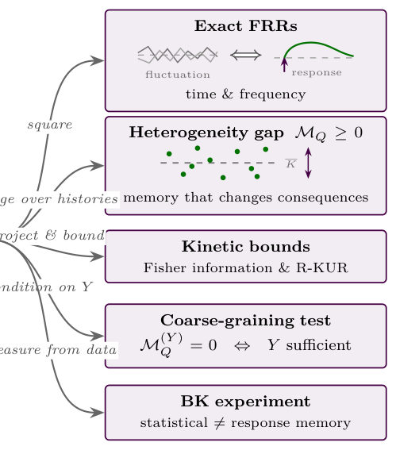
<figcaption class="paper-figure-caption"><b>Fig 1.</b> FIG. 1. Logical structure of the main results.</figcaption>
</figure>
<figure class="paper-figure-card">
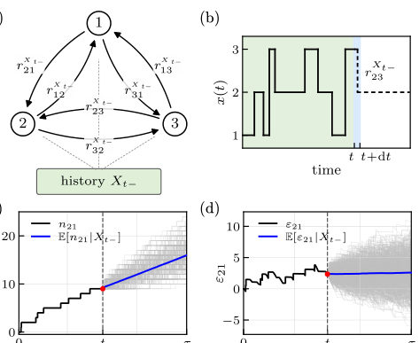
<figcaption class="paper-figure-caption"><b>Fig 2.</b> FIG. 2. Non-Markovian jump trajectories and martin- gale structure. (a) Schematic illustration of a three-state non-Markovian jump process. The transition rate r Xt− ij de- pends on the past trajectory Xt−. In the illustrative model, the memory is encoded by mj(t) = R t 0 e−(t−s)/τm1x(s)=j ds,</figcaption>
</figure>
<figure class="paper-figure-card">

<figcaption class="paper-figure-caption"><b>Fig 3.</b> FIG. 3. History-dependent additive observable. (a) A representative trajectory of a three-state non-Markovian jump process. The green segments indicate residence in state 1. (b) The corresponding memory variable m1(t) = R t 0 e−(t−s)/τm1x(s)=1 ds. (c) History-dependent weights used to construct the additive observable. The waiting-time weight is g Xt− 1 = g0 1 + ηgm1(t)/τm in state 1, while g2 and g3 are constants. The jump weight for the edge 1 →2 is c Xt− 21 = c0 21+ηcm1(t)/τm. The blue brackets indicate the two values of c Xt− 21 at the highlighted jumps. (d) The accumulated additive observable Q(t) = R t 0 P</figcaption>
</figure>
<figure class="paper-figure-card">

<figcaption class="paper-figure-caption"><b>Fig 4.</b> FIG. 4. History-conditioned and ordinary edge re- sponses. (a) Two representative histories XA t−and XB t−that reach the same state at time t. The dark-green segments mark the past residence in state 1, which determines the memory variable m1(t) and affects the history-dependent transition rates. At time t, we apply the same unit logarithmic per- turbation to the edge 1 →2. (b) Schematic comparison be- tween the edge responses RQ 21(τ, t | XA t−) and RQ 21(τ, t | XB t−), and the ordinary edge response RQ 21(τ, t) obtained by averag- ing over histories. The horizontal axis τ −t varies the future observation horizon at fixed perturbation time and fixed pre- history; no time-translation...</figcaption>
</figure>
<figure class="paper-figure-card">

<figcaption class="paper-figure-caption"><b>Fig 5.</b> FIG. 5. Time-domain FRRs, FRIs, and response- KUR. (a) The variance, exact FRR reconstruction, and FRI lower bound as functions of τ for the observable Qτ = R τ 0 1x(s)=1 ds; the shaded region indicates the response- heterogeneity gap generated by history averaging. (b) Time- domain response-KUR for a local perturbation of the edge 1 → 2. We choose the logarithmic rate perturbation ln r Xt−,ϵ 21 = ln r Xt− 21 +ϵ, so that α Xt− 21 = 1 and the Fisher infor- mation reduces exactly to the local activity of the perturbed edge, Iα(τ) = A21(τ). (c,d) History-conditioned responses RQ 21(τ, t|Xt−) for the perturbed edge 1 →2 under weak and strong memory, respectively. Here mj(t) encodes the accu-...</figcaption>
</figure>
</div>

<p><strong>Summary.</strong> This paper develops a novel fluctuation-response theory for complex, non-Markovian jump processes by analyzing the raw sequence of recorded events. It shows that the system's response to perturbations can be precisely mapped onto the orthogonal basis of unpredictable fluctuations (martingale increments). This provides exact, history-dependent relations that are vital for characterizing memory in systems where simple master equations fail.</p>
<p><strong>Why it may be interesting.</strong> It provides a rigorous, trajectory-level generalization of fluctuation-response theorems to non-Markovian regimes, which is crucial for analyzing open quantum systems where memory effects are dominant.</p>
<details>
<summary>Detailed structure</summary>
<p><strong>Main problem.</strong> Developing a fluctuation-response theory for non-Markovian jump processes that operates directly on the observed event record, overcoming limitations of theories designed for Markovian dynamics.</p>
<p><strong>Main result.</strong> The theory establishes that the history-conditioned response to a perturbation is exactly the expansion coefficient of the event in the observable fluctuation, yielding exact finite-time and finite-frequency fluctuation-response relations.</p>
<p><strong>Method.</strong> The core method involves decomposing observed jumps into a predictable 'event tendency' and an unpredictable 'martingale increment,' utilizing martingale representation theorems.</p>
<p><strong>Model / system.</strong> The theory applies to general non-Markovian jump processes, such as those observed in single-ion channels or enzyme kinetics, where transition rates depend on the system's history.</p>
<p><strong>Key observables.</strong> Event-consequence kernel, Response-Heterogeneity Gap, Martingale increments, and the intensity-normalized response.</p>
<p><strong>Important parameters / regimes.</strong> Finite time, finite frequency, and the degree of non-Markovianity.</p>
<p><strong>Assumptions / limitations.</strong> The theory assumes the existence of a complete orthogonal basis for random deviations (martingale increments) associated with the observed event record.</p>
<p><strong>Figures summary.</strong> Figure 1 outlines the theoretical structure: Trajectory-Level Closure leads to the Martingale Basis, which defines the Response, leading to Fluctuation-Response Relations (FRRs) and the Response-Heterogeneity Gap.</p>
<p><strong>Paper structure.</strong> The paper builds a theoretical framework by first identifying the mathematical structure of non-Markovian jumps via martingale decomposition, then deriving the central identity linking fluctuation to response, and finally quantifying memory effects using the response-heterogeneity gap.</p>
</details>
<details>
<summary>Abstract</summary>
<p>Modern experiments often record nonequilibrium dynamics as sequences of discrete events whose rates depend on the realized past. We develop a fluctuation-response theory for such non-Markovian jump processes directly on the observed event record. Memory can destroy a closed master equation for the state probabilities. Each transition count nevertheless obeys an exact stochastic equation. After the history-dependent mean event tendency is subtracted, the remaining random increment is a martingale increment--the part of the event that cannot be predicted from the past. Martingale increments associated with different transitions and different times are orthogonal. These increments form a complete orthogonal basis for the random deviation of any observable measured from the record, such as a current, occupation time, or event count. The coefficient of a given increment is the event-consequence kernel. It measures how that event changes the predicted final observable, relative to continuing without the event, for the particular history already realized. Multiplying this kernel by the event intensity gives the history-conditioned response to perturbing the corresponding transition rate. Thus, the intensity-normalized response is exactly the expansion coefficient of that event in the observable fluctuation. This identification yields exact finite-time and finite-frequency fluctuation-response relations. Averaging over histories leaves a nonnegative response-heterogeneity gap. The gap measures how strongly the consequence of the same event varies across histories and tests whether a proposed memory coordinate is response-sufficient. Finite-history versions can be estimated from spontaneous trajectories. Bounding the logarithmic rate sensitivity further gives response-kinetic uncertainty relations controlled by dynamical activity.</p>
</details>
<p><sub><a href="#top">↑ back to top</a></sub></p>

<p><a id="paper-2608.19312"></a></p>
<h3 id="interferometric-signatures-of-zero-modes-in-fractional-quantum-hall-superconductor-heterostructures"><a href="http://arxiv.org/abs/2608.19312v1">Interferometric Signatures of Zero Modes in Fractional Quantum Hall-Superconductor Heterostructures</a></h3>
<p><strong>Authors:</strong> Junyi Cao, Ramanjit Sohal, Angela Kou, Eduardo Fradkin<br>
<strong>Type:</strong> theory · <strong>Category:</strong> strongly correlated electrons · <strong>PDF:</strong> <a href="https://arxiv.org/pdf/2608.19312v1">https://arxiv.org/pdf/2608.19312v1</a><br>
<strong>Analysis basis:</strong> full PDF text, analyzed in chunks
<strong>Topic relevance:</strong> <code>interference shaping light</code> <strong>3/5</strong> · <code>Full counting statistics</code> <strong>1/5</strong> · <code>Keldysh / 2PI / non-Gaussian methods</code> <strong>1/5</strong> · <code>analog quantum simulation</code> <strong>1/5</strong> · <code>quantum measurements</code> <strong>1/5</strong></p>
<div class="figure-strip-hint">↔ Scroll figures horizontally</div>
<div class="paper-figures-scroll">
<figure class="paper-figure-card">

<figcaption class="paper-figure-caption"><b>Fig 1.</b> FIG. 1. Proposed device configurations. (a) An FQH-SC Josephson junction coupled to a single QPC. The supercon- ducting regions SC1 and SC2 (cyan) terminate at defects X1, . . . , X4 (red). QPC tunneling transfers an anyon b of the parent FQH state across the constriction with amplitude Γ. The two a lines represent tunneling of an “anyon Cooper pair” between SC1 and SC2; projected onto the defect Hilbert space, this process gives the zero mode tunneling operator α(2)† a α(3) a with amplitude λa. (b) An FQH-SC Josephson junction embedded in a two-QPC Fabry-P´erot interferome- ter. The QPC tunneling amplitudes are Γ1 and Γ2, while S and D denote the source and drain.</figcaption>
</figure>
<figure class="paper-figure-card">

<figcaption class="paper-figure-caption"><b>Fig 2.</b> FIG. 2. QPC-induced fusion-channel shifts. (a) In a Laugh- lin FQH-SC at ν = 1/3, tunneling a Laughlin quasihole shifts l →l + 2. (b) In an MR FQH-SC at ν = 1/2, tunneling σ1 shifts the charge-sector fusion channel by one, while tunneling 12 shifts it by two. The vertical axis shows the normalized Josephson energy. These fusion-channel shifts occur proba- bilistically as a result of quasiparticle tunneling at the QPC.</figcaption>
</figure>
<figure class="paper-figure-card">

<figcaption class="paper-figure-caption"><b>Fig 3.</b> FIG. 3. Folded representations of the QPC and zero mode processes. After folding the counterpropagating edges, the super- conducting regions become gapped boundaries and the two processes form a half-linking configuration. The two components of the folded theory each contribute Sab/Sa0, yielding the squared factor in Eq. (5).</figcaption>
</figure>
</div>

<p><strong>Summary.</strong> This theoretical work develops a method to probe the exotic fusion structure of parafermion zero modes in FQH-SC heterostructures using superconducting interferometers. By analyzing the interference signal in the two-QPC setup, the authors predict that strong zero mode tunneling causes the interference term to vanish exactly. This cancellation serves as a unique, measurable signature confirming the non-Abelian nature of the underlying topological order.</p>
<p><strong>Why it may be interesting.</strong> The mechanism of interference cancellation due to non-Abelian statistics is a powerful diagnostic tool, providing a clean signature of topological order that can be measured using superconducting circuits, which is relevant for understanding emergent quantum phenomena in condensed matter.</p>
<details>
<summary>Detailed structure</summary>
<p><strong>Main problem.</strong> The paper investigates how interferometric measurements can probe the fusion structure of defect-bound parafermion zero modes (PZMs) in Fractional Quantum Hall-Superconductor (FQH-SC) heterostructures.</p>
<p><strong>Main result.</strong> Strong zero mode tunneling leads to the exact cancellation of the interference signal in the Fabry-Pérot interferometer, providing a robust signature of the defects' non-Abelian nature, even when the parent FQH state is Abelian.</p>
<p><strong>Method.</strong> The analysis uses theoretical calculations involving modular S-matrices and the F-move to evaluate the expectation value of loop operators, comparing different fusion bases.</p>
<p><strong>Model / system.</strong> The system is FQH-SC heterostructures, modeled using anyon statistics, Josephson junctions, and Quantum Point Contacts (QPCs). The physics is analyzed for Laughlin and Moore-Read states.</p>
<p><strong>Key observables.</strong> Interference conductance ($\sigma_{xx}$), fractional Josephson spectrum periodicity, and the expectation value of the loop operator ($\langle W_{Nqh,b} 
angle$).</p>
<p><strong>Important parameters / regimes.</strong> Tunneling amplitudes ($\lambda_a$, $\Gamma$), superconducting phase difference ($\phi_{SC}$), and the topological limit.</p>
<p><strong>Assumptions / limitations.</strong> The analysis relies on treating zero mode tunneling perturbatively and assumes specific fixed total fusion channels for the defects.</p>
<p><strong>Figures summary.</strong> Figure 1 illustrates the two proposed device configurations: a single-QPC junction and a two-QPC Fabry-Pérot interferometer. Figure 2 shows QPC-induced fusion-channel shifts in Laughlin and MR systems.</p>
<p><strong>Paper structure.</strong> The paper systematically analyzes the physics in two main setups (single-QPC vs. two-QPC interferometer), deriving spectral properties for Abelian and non-Abelian cases, and culminating in the calculation of the interference term based on the F-move algebra.</p>
</details>
<details>
<summary>Abstract</summary>
<p>Fractional quantum Hall-superconductor (FQH-SC) heterostructures are predicted to host defect-bound parafermion zero modes (PZMs). We propose two related configurations to probe their fusion structure. In a Josephson junction coupled to a single quantum point contact (QPC), quasiparticle tunneling switches the defect fusion channel, producing stochastic transitions between branches of the fractional Josephson spectrum. Embedding the junction in a two-QPC Fabry-Pérot interferometer provides a complementary probe. Weak zero mode tunneling produces fusion-channel-dependent interference while strong tunneling makes the interferometer probe a superposition of fusion channels and strongly suppresses the signal: in the topological limit it vanishes exactly, revealing the defects' non-Abelian nature even when the parent FQH state is Abelian.</p>
</details>
<p><sub><a href="#top">↑ back to top</a></sub></p>

<p><a id="paper-2608.19318"></a></p>
<h3 id="simulating-black-hole-thermality-and-interior-scrambling-on-a-superconducting-quantum-processor"><a href="http://arxiv.org/abs/2608.19318v1">Simulating Black Hole Thermality and Interior Scrambling on a Superconducting Quantum Processor</a></h3>
<p><strong>Authors:</strong> Ryan Smith, Ewan Forbes, Iason Sofos Andrew Hallam, Jiannis Pachos<br>
<strong>Type:</strong> both · <strong>Category:</strong> other · <strong>PDF:</strong> <a href="https://arxiv.org/pdf/2608.19318v1">https://arxiv.org/pdf/2608.19318v1</a><br>
<strong>Analysis basis:</strong> full PDF text, analyzed in chunks
<strong>Topic relevance:</strong> <code>QC/QI experiment</code> <strong>3/5</strong> · <code>analog quantum simulation</code> <strong>3/5</strong> · <code>quantum measurements</code> <strong>1/5</strong></p>
<div class="figure-strip-hint">↔ Scroll figures horizontally</div>
<div class="paper-figures-scroll">
<figure class="paper-figure-card">

<figcaption class="paper-figure-caption"><b>Fig 1.</b> Figure 1. Overview of the black hole quantum simulator and its hardware validation. (a) Relations among the lattice Hamiltonians, quantum circuits and effective theories considered in this work. The interacting chiral model HC reduces under mean-field theory to HMF, whose semiclassical geometry is coordinate-equivalent to that of the free-fermion XY model HXY. The circuits UMF and UXY reproduce their respective Hamiltonian dynamics in the small-time-step limit. The reduced circuit Uint instead isolates the non-free-fermionic sector of the parent chiral circuit used to probe scrambling. (b) Spatial coupling profile and effective light-cone structure across the exterior, horizon and interior....</figcaption>
</figure>
<figure class="paper-figure-card">

<figcaption class="paper-figure-caption"><b>Fig 2.</b> Figure 2. Extraction of the Hawking temperature in the semiclassical black hole simulator. (a) Temperature obtained by fitting the exterior mode occupations of the XY and mean-field chiral Hamiltonians to the thermal distribution in Eq. (27), shown as a function of the profile parameter α for different system sizes N. The black dashed line denotes the continuum prediction for the Hawking temperature given by Eq. (26). Inset: finite-size scaling of the derivative dT/dα for the two models, demonstrating convergence towards the theoretical value. (b) Site-resolved occupation density during the evolution of a wave packet under UXY on ibm boston, for N = 32, α = 0.8, and the inhomogeneous...</figcaption>
</figure>
<figure class="paper-figure-card">

<figcaption class="paper-figure-caption"><b>Fig 3.</b> Figure 3. Tunable scrambling measured on superconducting quantum hardware. (a) Left: OTOC C(t) in the strongly in- teracting chiral regime, ϕ = π, for N = 24 spins. Blue and orange points show the error-mitigated and raw hardware data, respectively. The black dashed curve is a fit to Eq. (33), and the shaded region indicates the fitting window [χ2 ν ≈1.26]. (a) Right: Corresponding OTOC dynamics in the free-fermion limit, ϕ = 0. Here, the Lyapunov form gives a poor description of the decay, and the fitted value should be interpreted only as an effective decay scale [χ2 ν ≈2.50]. (b): Fitted decay scale as a function of ϕ for N = 18 and N = 24 spins. For sufficiently strong interactions, the...</figcaption>
</figure>
<figure class="paper-figure-card">

<figcaption class="paper-figure-caption"><b>Fig 4.</b> Figure 4. Demonstration of the error mitigation strategy for the Hawking temperature on ibm boston. The solid and dashed lines show the hardware-measured population densi- ties for the time-evolved excited and unexcited initial states, respectively, where the latter is used as a measure of the initial state’s decoherence. Results are for N = 32 qubits with the horizon positioned at nh = 15.5 and the initial single-particle excitation on site j = 15. The population densities ⟨nj⟩are measured outside the horizon at site j = 16.</figcaption>
</figure>
<figure class="paper-figure-card">

<figcaption class="paper-figure-caption"><b>Fig 5.</b> Figure 5. Chosen qubits for the different experiments on the superconducting processor. (a): Qubit mapping onto ibm boston for the Hawking temperature experiments, which contain 3 independent chains of N = 32 qubits that are run in parallel, denoted by the red circles and connections. The blue circles and black lines are the unused qubits and connec- tions. This mapping was used to produce Fig. 2(b-c). (b): A similar qubit mapping, but for the scrambling circuits, which contain 4 chains of N = 24 qubits and were used to produce Figures. 3(a-b).</figcaption>
</figure>
</div>

<p><strong>Summary.</strong> This work implements a black hole analogue simulator on superconducting quantum hardware to probe fundamental physics. By tailoring quantum circuits, the authors measure key signatures of black hole physics, including the effective light-cone structure, the characteristic signal of Hawking temperature, and the transition from free-fermion to strongly interacting quantum scrambling. This establishes a unified, programmable platform for quantum gravity research.</p>
<p><strong>Why it may be interesting.</strong> It provides a concrete, hardware-implementable framework to test deep theoretical concepts from quantum gravity (like Hawking radiation and spacetime structure) using modern quantum computing tools.</p>
<details>
<summary>Detailed structure</summary>
<p><strong>Main problem.</strong> The paper aims to study both semiclassical black hole horizon physics (Hawking thermality) and strongly interacting quantum scrambling using a unified, programmable quantum simulation platform.</p>
<p><strong>Main result.</strong> The authors successfully demonstrated the measurement of Hawking thermality and the distinction between free-fermion and strongly interacting scrambling dynamics on superconducting quantum hardware.</p>
<p><strong>Method.</strong> The study employs a chiral spin-chain black hole analogue Hamiltonian, which is decomposed into multiple, observable-specific Floquet circuits tailored for different physical probes.</p>
<p><strong>Model / system.</strong> The system is a chiral spin-chain black hole analogue simulated on IBM superconducting quantum hardware. The model includes three related lattice realizations: the full interacting chiral model, a mean-field (semiclassical) limit, and a free-fermion XY model.</p>
<p><strong>Key observables.</strong> Dispersion relation (across exterior, horizon, interior), density response for Hawking thermality, and Out-of-Time-Ordered Correlators (OTOCs) for scrambling.</p>
<p><strong>Important parameters / regimes.</strong> Surface gravity, coupling profile gradient ($\alpha$), and the tunable interaction parameter ($\phi$) controlling the transition between free-fermion and interacting regimes.</p>
<p><strong>Assumptions / limitations.</strong> The primary approximations involve using reduced, observable-specific circuits to manage circuit depth, and employing error mitigation techniques like Pauli twirling and Zero Noise Extrapolations (ZNE) for hardware measurements.</p>
<p><strong>Figures summary.</strong> Figures illustrate the relationship between the three lattice Hamiltonians and their corresponding circuits, show measured dispersion relations across different spacetime regimes, and compare OTOC decay rates between different theoretical limits.</p>
<p><strong>Paper structure.</strong> The paper establishes the physical model (chiral spin-chain), derives multiple circuit approximations ($U_{MF}, U_{XY}, U_{int}$), and then systematically measures three distinct phenomena—geometry, thermality, and scrambling—using these tailored circuits on quantum hardware.</p>
</details>
<details>
<summary>Abstract</summary>
<p>We implement a chiral spin-chain black hole simulator on IBM superconducting quantum hardware and probe, within a common microscopic framework, both semiclassical horizon physics and interacting quantum scrambling. We first measure the dispersion relation across the exterior, horizon and over-tilted interior regimes, reproducing the predicted evolution of the effective light-cone structure. To probe Hawking thermality, we prepare a localised excitation inside the horizon and monitor its density response at an exterior site, observing the predicted inverse relation between the peak arrival time and the surface gravity, thereby establishing a calibrated dynamical estimator of the Hawking temperature. Beyond the semiclassical regime, we continuously tune the interactions and distinguish non-exponential operator spreading in the free-fermion limit from Lyapunov-like OTOC decay in the strongly interacting chiral regime. These measurements use observable-specific Floquet circuits derived from the same parent chiral model, including its mean-field and coordinate-equivalent XY descriptions, to reduce circuit depth while preserving the physics relevant to each probe. Our results provide a unified programmable platform for studying horizon geometry, Hawking thermality and interacting scrambling on quantum hardware.</p>
</details>
<p><sub><a href="#top">↑ back to top</a></sub></p>

<p><a id="paper-2608.19770"></a></p>
<h3 id="gradient-flow-towards-quantum-states-with-ideal-quantum-geometry"><a href="http://arxiv.org/abs/2608.19770v1">Gradient flow towards quantum states with ideal quantum geometry</a></h3>
<p><strong>Authors:</strong> T. Shiga, T. Fukui<br>
<strong>Type:</strong> theory · <strong>Category:</strong> other · <strong>PDF:</strong> <a href="https://arxiv.org/pdf/2608.19770v1">https://arxiv.org/pdf/2608.19770v1</a><br>
<strong>Analysis basis:</strong> full PDF text, analyzed in chunks
<strong>Topic relevance:</strong> <code>analog quantum simulation</code> <strong>3/5</strong> · <code>Keldysh / 2PI / non-Gaussian methods</code> <strong>1/5</strong> · <code>methods for driven-dissipative</code> <strong>1/5</strong> · <code>quantum measurements</code> <strong>1/5</strong></p>
<div class="figure-strip-hint">↔ Scroll figures horizontally</div>
<div class="paper-figures-scroll">
<figure class="paper-figure-card">

<figcaption class="paper-figure-caption"><b>Fig 1.</b> FIG. 1. Berry curvature Ω(k) for the Wilson–Dirac model with mass parameter m = 2.2 and t = b = 1, computed on a 312</figcaption>
</figure>
<figure class="paper-figure-card">

<figcaption class="paper-figure-caption"><b>Fig 2.</b> FIG. 2. Dependence of the ratios RΩand RB, defined in Eqs. (105) and (107), on the relative weight β, with α + β = 1. The two ratios exhibit opposite trends as β is increased.</figcaption>
</figure>
<figure class="paper-figure-card">

<figcaption class="paper-figure-caption"><b>Fig 3.</b> FIG. 3. The three left panels show the Berry curvature Ω(k) for the initial, flowed, and truncated models, as three-dimensional surface plots, complementary to the density plots in Fig. 1. The parameters are the same as those in Fig. 1, except that (α, β) = (0.3, 0.7). For the truncated model, the range of Ωis ∆Ω= 0.50. The rightmost panel shows the energy spectrum of the truncated Hamiltonian in Eq. (109) with the hopping matrices given in Eqs. (110)–(112). The bandwidth of the truncated model is ∆E = 0.08.</figcaption>
</figure>
<figure class="paper-figure-card">

<figcaption class="paper-figure-caption"><b>Fig 4.</b> FIG. 4. Berry curvature distribution for the lowest Hofstadter band at ϕ = 2/5, with Chern number C = 2. The horizontal axis is the microscopic momentum ˜k1. The panels show the initial projector and flowed projectors for (α, β) = (1.0, 0.0), (0.8, 0.2), and (0.6, 0.4), with α + β = 1. Increasing β sup- presses the curvature peaks and makes the Berry curvature more uniform. The color scale is chosen to resolve the initial distribution; in the (α, β) = (1.0, 0.0) panel, the Berry curva- ture has two sharply localized peaks whose maximum value is approximately Ω≃240, outside the displayed color range.</figcaption>
</figure>
</div>

<p><strong>Summary.</strong> This paper introduces a gradient-flow technique to optimize quantum states in lattice models towards ideal quantum geometry. By balancing the drive towards Bogomolny saturation and uniform Berry curvature, the method successfully constructs simplified, short-range Hamiltonians. This provides a theoretical pathway for designing materials with desired topological properties like flat bands and uniform Berry curvature.</p>
<p><strong>Why it may be interesting.</strong> This work provides a powerful, geometric tool for designing effective Hamiltonians for topological materials, which is highly relevant for understanding band structure engineering in condensed matter physics.</p>
<details>
<summary>Detailed structure</summary>
<p><strong>Main problem.</strong> The paper develops a gradient-flow method to drive quantum states in lattice models towards an 'ideal quantum geometry' by simultaneously balancing two competing geometric requirements: Bogomolny saturation and uniform Berry curvature.</p>
<p><strong>Main result.</strong> The flow converges to a non-trivial fixed point that balances these two requirements, allowing for the construction of short-range lattice Hamiltonians exhibiting nearly flat bands and uniform Berry curvature.</p>
<p><strong>Method.</strong> A gradient-flow equation, derived from an action combining the quantum metric and the square of the Berry curvature, is used to evolve the spectral projector on the manifold of quantum states.</p>
<p><strong>Model / system.</strong> The method is tested on lattice models, specifically the Wilson-Dirac model and the Hofstadter model, which are used to study topological properties in condensed matter systems.</p>
<p><strong>Key observables.</strong> Quantum metric ($g_{\mu
u}$), Berry curvature ($\Omega$), Bogomolny defect ($\delta_B$), and the normalized ratios $R_{\Omega}$ and $R_B$.</p>
<p><strong>Important parameters / regimes.</strong> The flow is controlled by parameters $(\alpha, eta)$ weighting the metric and curvature terms, respectively.</p>
<p><strong>Assumptions / limitations.</strong> The primary assumption is that the combined flow is necessary because the two geometric conditions cannot be satisfied simultaneously in finite-dimensional lattice models (a 'no-go theorem').</p>
<p><strong>Figures summary.</strong> Figures illustrate the evolution of Berry curvature ($\Omega(k)$) and the dependence of the reduction ratios ($R_{\Omega}$ and $R_B$) on the weighting parameter $eta$.</p>
<p><strong>Paper structure.</strong> The paper first introduces the gradient flow formalism and the competing geometric bounds. It then analyzes the flow equations for the metric and curvature, demonstrating the trade-off. Finally, it applies this to specific models (Wilson-Dirac, Hofstadter) to construct improved, short-range Hamiltonians.</p>
</details>
<details>
<summary>Abstract</summary>
<p>We propose a gradient-flow method for quantum states in lattice models, generated by an action consisting of the quantum-metric and the square of the Berry curvature. These two terms drive the spectral projector toward Bogomolny saturation and uniform Berry curvature, respectively. We show that, due to a no-go theorem for finite-dimensional projectors, the two conditions cannot in general be satisfied simultaneously in lattice models. Hence the flow is expected to approach a nontrivial fixed point that balances the two geometric requirements. For the Wilson-Dirac model, we demonstrate that the flowed projector exhibits almost uniform Berry curvature while remaining close to the Bogomolny bound. We further construct a short-range truncated flattened Hamiltonian from the flowed projector and obtain a lattice model with nearly flat bands and nearly uniform Berry curvature. We also apply the method to the Hofstadter model and confirm the roles of the metric and Berry-curvature terms in a Chern band with higher Chern number.</p>
</details>
<p><sub><a href="#top">↑ back to top</a></sub></p>

<p><a id="paper-2608.20139"></a></p>
<h3 id="reinforcement-learningtoharness-approximation-errors-for-long-time-quantumsimulation"><a href="http://arxiv.org/abs/2608.20139v1">Reinforcement LearningtoHarness Approximation Errors for Long-Time QuantumSimulation</a></h3>
<p><strong>Authors:</strong> Yu-Bo Shi, Markus Heyl, Roderich Moessner, Marin Bukov, Hongzheng Zhao<br>
<strong>Type:</strong> theory · <strong>Category:</strong> numerical methods · <strong>PDF:</strong> <a href="https://arxiv.org/pdf/2608.20139v1">https://arxiv.org/pdf/2608.20139v1</a><br>
<strong>Analysis basis:</strong> full PDF text, analyzed in chunks
<strong>Topic relevance:</strong> <code>analog quantum simulation</code> <strong>3/5</strong> · <code>methods for driven-dissipative</code> <strong>2/5</strong> · <code>quantum measurements</code> <strong>1/5</strong></p>
<div class="figure-strip-hint">↔ Scroll figures horizontally</div>
<div class="paper-figures-scroll">
<figure class="paper-figure-card">

<figcaption class="paper-figure-caption"><b>Fig 1.</b> FIG. 1. Symmetry-guided RL for adaptive Trotterization. (a) Closed-loop workflow of RL-Trotter. Starting from the initial state |𝜓(0)⟩, the quantum state is propagated through a sequence of Trotter operations 𝑈(𝛿𝑡𝑖), which is defined in Eq. (1), with the accumulated evolution time 𝑡𝑛= Í𝑛−1 𝑖=0 𝛿𝑡𝑖. After each step, the current noisy measurements of conserved quantities—here, the energy and its variance—together with their initially measured values and 𝑡𝑛, are supplied to the RL agent, which selects the next Trotter step size 𝛿𝑡𝑛+1. (b) A representative illustration of the learning process (total episode reward Í 𝑛𝑅𝑛versus training episode). The overall increase and subsequent saturation of...</figcaption>
</figure>
<figure class="paper-figure-card">

<figcaption class="paper-figure-caption"><b>Fig 2.</b> FIG. 2. Comparison of the quench dynamics under different Trot- ter algorithms with exact dynamics (orange). (a, b) Dynamics of the magnetization in the 𝑥direction and the corresponding error with respect to the exact evolution for the first 50 Trotter steps. Whereas RL-Trotter (red circles) and conventional Trotter (cyan triangles) have the same total evolution time, 𝑡=12.53𝐽−1, RL-Trotter produces sig- nificantly smaller errors. ADA-Trotter (green squares) can suppress the errors to a level comparable to RL-Trotter. However, its total evolution time, 𝑡= 7.72𝐽−1 shown by green dashed line, is shorter than that of RL-Trotter as ADA-Trotter freezes, i.e., the algorithm tends to always choose...</figcaption>
</figure>
<figure class="paper-figure-card">

<figcaption class="paper-figure-caption"><b>Fig 3.</b> FIG. 3. Noise robustness of different Trotter algorithms. We plot the errors in the energy density (a) and energy variance den- sity (b) during the first 40 Trotter steps for different Trotter algo- rithms in a noisy environment with noise strength 𝜎1=𝜎2=0.1. The RL agent is trained in a noisy environment with 𝜎1=𝜎2=0.03. For RL-Trotter (red) and ADA-Trotter (green), the markers and error- bar regions denote the mean and standard deviation over 50 in- dependent evaluations. The inset of (b) shows the Trotter step size 𝛿𝑡𝑛at each Trotter step. RL-Trotter remains stable against noise throughout the evolution, whereas the average Trotter step size of ADA-Trotter decreases continuously. The...</figcaption>
</figure>
<figure class="paper-figure-card">

<figcaption class="paper-figure-caption"><b>Fig 4.</b> FIG. 4. Generalization of the learned policy to larger system sizes. We plot RL-Trotter dynamics of (a) the order parameter 𝑂(𝑡) and (b–d) the magnetization 𝑀𝛼(𝑡) with 𝛼=𝑥, 𝑦, 𝑧for different system sizes. The policy is trained only at 𝐿=8, whose results are shown by the green curves. We then apply the learned policy, without further training, to larger systems with 𝐿=12, 16, 20 (red curves). The exact time-evolution curves for 𝐿=8 and 𝐿=20 are shown by the yellow and blue dots, respectively. Although the thermalization behavior depends strongly on the system size, the RL-Trotter dynamics for 𝐿= 20 agrees well with the exact dynamics at the same system size, demonstrating the transferability...</figcaption>
</figure>
<figure class="paper-figure-card">

<figcaption class="paper-figure-caption"><b>Fig 5.</b> FIG. 5. MPS benchmark of the RL-Trotter protocol for a large system. Time evolution of (a) the energy density E(𝑡), (b) the energy- variance density 𝛿E2(𝑡), and (c) the staggered order parameter 𝑂(𝑡) for a system with 𝐿= 100 of the first 20 Trotter steps. The RL agent is trained on small systems of 𝐿= 8 using ED with periodic boundary conditions. We directly apply this agent to a large system using MPS representation with open boundary conditions. The quench is performed from ℎ𝑧= 0 and ℎ𝑥= 0.1 to ℎ𝑧= 0.3 and ℎ𝑥= 0.3. The average errors of E, 𝛿E2, and the AFM order 𝑂are 1.62 × 10−3𝐽, 7.07 × 10−3𝐽2, and 1.02 × 10−2, respectively. All error measures are reduced by approximately one order of...</figcaption>
</figure>
</div>

<p><strong>Summary.</strong> This paper introduces RL-Trotter, an RL framework that revolutionizes digital quantum simulation by treating unavoidable Trotterization errors as resources rather than just noise. By training an agent to adaptively select the time step size based on conserved quantities, the method achieves significantly longer, more accurate, and more robust long-time quantum dynamics compared to existing adaptive protocols.</p>
<p><strong>Why it may be interesting.</strong> This work provides a powerful, data-driven paradigm shift for quantum simulation, moving beyond error suppression to actively managing and utilizing simulation errors, which is highly relevant for resource-constrained quantum hardware.</p>
<details>
<summary>Detailed structure</summary>
<p><strong>Main problem.</strong> Accurate digital quantum simulation (DQS) over long time scales is fundamentally limited by the accumulation of unavoidable approximation errors from time-stepping schemes like Trotterization.</p>
<p><strong>Main result.</strong> The proposed RL-Trotter framework successfully learns to treat these approximation errors as resources, orchestrating them into self-correcting sequences that maintain high accuracy over much longer simulation times than conventional adaptive methods.</p>
<p><strong>Method.</strong> A Reinforcement Learning (RL) agent is trained to adaptively select the next Trotter step size ($\delta t$) by using low-dimensional information from conserved quantities (like energy and energy variance) as the primary learning signal.</p>
<p><strong>Model / system.</strong> The method is applied to the time evolution of quantum many-body systems, exemplified by a 1D mixed-field Ising model ($H = H_1 + H_2$). The simulation uses Trotterization to approximate the time evolution operator.</p>
<p><strong>Key observables.</strong> Energy ($E_n$), energy variance ($\Delta E^2_n$), magnetization ($M_x(t)$), and the order parameter ($O(t)$).</p>
<p><strong>Important parameters / regimes.</strong> The system size ($L$), the quench process parameters (e.g., $h_x, h_z$), and the range of possible Trotter step sizes $[\delta t_{\min}, \delta t_{\max}]$.</p>
<p><strong>Assumptions / limitations.</strong> The core assumption is that low-dimensional information derived from conservation laws (energy/variance) is sufficient to guide the adaptive step-size selection, allowing the agent to optimize the entire long-time evolution.</p>
<p><strong>Figures summary.</strong> Figures compare the time evolution of observables ($M_x(t)$, $O(t)$) and their associated errors ($\Delta M_x(t)$) for RL-Trotter against conventional and adaptive Trotter methods, demonstrating superior performance and generalization.</p>
<p><strong>Paper structure.</strong> The paper introduces the problem of error accumulation in DQS, details the RL-Trotter framework using conserved quantities as state inputs, compares its performance against ADA-Trotter and fixed-step methods across various system sizes, and concludes by establishing the principle of error resource utilization.</p>
</details>
<details>
<summary>Abstract</summary>
<p>Accurate digital quantum simulation at long times is limited by the accumulation of errors inherent to approximate simulation. Here we introduce RL-Trotter, a reinforcement-learning framework that treats unavoidable approximation errors as resources for error correction rather than merely imperfections to suppress. We show that low-dimensional information from conservation laws, such as the energy and energy variance, provides a sufficient learning signal to guide the agent, which learns to adapt a single scalar---the next Trotter step size---without access to the target wave function. By optimizing the entire long-time evolution rather than individual steps, RL-Trotter discovers self-correcting sequences in which later errors compensate for those accumulated earlier, increasing the accuracy of the long-time dynamics. The learned policies are intrinsically robust to measurement noise, substantially reducing measurement overhead. They also generalize to previously unseen, physically similar initial states and transfer from small, classically simulable systems to systems an order of magnitude larger. This enables a practical protocol based on classical pretraining followed by direct deployment or limited fine-tuning on quantum hardware. Our results establish a broader perspective for quantum algorithms: errors in approximate evolution can be orchestrated into resources for accurate and resource-efficient quantum dynamics.</p>
</details>
<p><sub><a href="#top">↑ back to top</a></sub></p>

<p><a id="paper-2608.19370"></a></p>
<h3 id="rethinking-quantum-circuits"><a href="http://arxiv.org/abs/2608.19370v1">Rethinking Quantum Circuits</a></h3>
<p><strong>Authors:</strong> Steven Rayan<br>
<strong>Type:</strong> both · <strong>Category:</strong> quantum information and computing · <strong>PDF:</strong> <a href="https://arxiv.org/pdf/2608.19370v1">https://arxiv.org/pdf/2608.19370v1</a><br>
<strong>Analysis basis:</strong> full PDF text, analyzed in chunks
<strong>Topic relevance:</strong> <code>QC/QI experiment</code> <strong>3/5</strong> · <code>analog quantum simulation</code> <strong>2/5</strong> · <code>quantum measurements</code> <strong>1/5</strong></p>
<div class="figure-strip-hint">↔ Scroll figures horizontally</div>
<div class="paper-figures-scroll">
<figure class="paper-figure-card">

<figcaption class="paper-figure-caption"><b>Fig 1.</b> Figure 1: The same circuit is studied operationally, diagrammatically, fault-tolerantly, and geometrically.</figcaption>
</figure>
<figure class="paper-figure-card">

<figcaption class="paper-figure-caption"><b>Fig 2.</b> Figure 2: An irreversible truth table can be placed inside a reversible, and hence unitary, oracle.</figcaption>
</figure>
<figure class="paper-figure-card">

<figcaption class="paper-figure-caption"><b>Fig 3.</b> Figure 3: A pure qubit is a point on the Bloch sphere. Relative phase is an observable direction, not an extra classical probability.</figcaption>
</figure>
<figure class="paper-figure-card">

<figcaption class="paper-figure-caption"><b>Fig 4.</b> Figure 6: Grover’s iterate is confined to a two-dimensional invariant plane even though the Hilbert space has dimension N.</figcaption>
</figure>
<figure class="paper-figure-card">

<figcaption class="paper-figure-caption"><b>Fig 5.</b> Figure 8: The cup and cap are dual choices. Partial contraction gives the snake, or yanking, identity.</figcaption>
</figure>
</div>

<p><strong>Summary.</strong> This work proposes a comprehensive framework to understand quantum circuits by viewing them through four interconnected lenses: operational, diagrammatic, error-correcting, and geometric. It builds from abstract tools like the ZX-calculus to advanced concepts like hyperbolic quantum codes. The ultimate goal is to show how modern device physics experiments provide a physical realization of these abstract mathematical structures.</p>
<p><strong>Why it may be interesting.</strong> It provides a powerful geometric lens for quantum information, linking abstract algebraic structures (like homology) directly to the physical constraints and measurable properties (like curvature and spectral gaps) of superconducting quantum hardware.</p>
<details>
<summary>Detailed structure</summary>
<p><strong>Main problem.</strong> To develop a unified, multi-faceted framework for understanding quantum circuits by viewing them through operational, diagrammatic, error-correcting, and geometric lenses.</p>
<p><strong>Main result.</strong> The paper establishes a deep interconnection between abstract quantum circuit theory (like the ZX-calculus) and concrete physical realizations, such as superconducting circuits emulating hyperbolic lattices.</p>
<p><strong>Method.</strong> The approach involves synthesizing a workflow that translates circuit specifications through four complementary viewpoints: operational gates, diagrammatic rules, fault-tolerant encoding, and geometric topology.</p>
<p><strong>Model / system.</strong> The core model is the quantum circuit, which is analyzed across its evolution from basic qubits to complex structures like homological surface codes and superconducting lattices with specific curvatures.</p>
<p><strong>Key observables.</strong> ZX diagrams, connectivity, topology, boundary data, syndrome measurements, and the spectral gap of the physical system.</p>
<p><strong>Important parameters / regimes.</strong> Curvature (hyperbolic geometry), logical degrees of freedom, error rates, and the ratio of boundary to area ($C(R)/A(R)$).</p>
<p><strong>Assumptions / limitations.</strong> The development assumes that the four descriptive levels (Thinking, Drawing, Correcting, Geometrizing) are complementary and that physical experiments can operationalize the abstract diagrammatic rules.</p>
<p><strong>Figures summary.</strong> Figure 1 illustrates the same circuit analyzed across the four viewpoints: operational, diagrammatic, fault-tolerant, and geometric.</p>
<p><strong>Paper structure.</strong> The structure progresses from defining the four interconnected ways to read a circuit (operational $   o$ diagrammatic $   o$ protected $  o$ geometric), developing tools like the ZX-calculus, applying error correction theory (Knill-Laflamme, surface codes), and concluding with the physical realization in superconducting circuits.</p>
</details>
<details>
<summary>Abstract</summary>
<p>These notes develop four interconnected ways of reading a quantum circuit. A circuit for us begins as an operational composition of gates; then, it becomes a diagram whose local equalities may be used as calculations; next, it becomes a protected process once errors, syndromes, and logical degrees of freedom are separated; and finally, it becomes geometric when its connectivity, topology, and boundary data are treated as physical design parameters. The development begins at the level of bits and qubits before appealing to Deutsch's and Grover's algorithms as basic examples of quantum circuits. With the basics in hand, we interpret quantum circuits diagramatically, leading us to compact closed string diagrams and the ZX-calculus. After that, we consider how to correct quantum circuits by introducing the Knill--Laflamme condition, homological surface codes, and related concepts with a view towards thinking of these as operations on diagrams. The lectures eventually arrive at the properties of hyperbolic quantum codes and the prospect of physical superconducting circuits emulating the negatively-curved lattices needed to support those codes. These mathematical ideas and physical experiments, taken together, represent one way to impart a geometric layer onto quantum circuits. By the very end, we bring the ideas nearly full circle by assessing the extent to which these device physics experiments operationalize the basic ZX diagrams encountered much earlier in the story. While the later material reports on original research, and while the discussion becomes increasingly mathematical as the sections progress, no prior knowledge of quantum information, quantum computing, or quantum error correction is actually assumed.</p>
</details>
<p><sub><a href="#top">↑ back to top</a></sub></p>

<p><a id="paper-2608.19745"></a></p>
<h3 id="multiplexing-of-continuous-variable-and-discrete-variable-quantum-key-distribution-systems-over-fibered-and-free-space-channels"><a href="http://arxiv.org/abs/2608.19745v1">Multiplexing of Continuous-Variable and Discrete-Variable Quantum Key Distribution Systems over Fibered and Free-Space Channels</a></h3>
<p><strong>Authors:</strong> Mattia Sabatini, Edoardo Rossi, Matías R. Bolaños, Francesco Vedovato, Thomas Liege, Eleni Diamanti, Giuseppe Vallone, Paolo Villoresi, Yoann Piétri, Marco Avesani<br>
<strong>Type:</strong> experiment · <strong>Category:</strong> quantum information and computing · <strong>PDF:</strong> <a href="https://arxiv.org/pdf/2608.19745v1">https://arxiv.org/pdf/2608.19745v1</a><br>
<strong>Analysis basis:</strong> full PDF text, analyzed in chunks
<strong>Topic relevance:</strong> <code>quantum optics experiment</code> <strong>3/5</strong> · <code>QC/QI experiment</code> <strong>1/5</strong> · <code>interference shaping light</code> <strong>1/5</strong></p>
<div class="figure-strip-hint">↔ Scroll figures horizontally</div>
<div class="paper-figures-scroll">
<figure class="paper-figure-card">

<figcaption class="paper-figure-caption"><b>Fig 1.</b> Figure 1. Experimental setup of the CV-QKD system. At Alice, a narrow-linewidth CW laser (LASER1) is modulated by an IQ modulator (IQ-MOD), attenuated to the quantum level by a variable optical attenuator (VOA) and a fixed attenuator (ATT). A 95:5 beam splitter (BS1) sends 95% of the power to an optical power meter (PM1) for monitoring, while the remaining 5% constitutes the quantum signal sent towards the channel. At Bob, the signal passes through a motorized polarization controller (MPC), a PBS and an optical power meter (PM2), which are used together to align the polarization of the receiver with that of the transmitter, is then interfered with an independent LO (LASER2) on a 50:50 beam...</figcaption>
</figure>
<figure class="paper-figure-card">

<figcaption class="paper-figure-caption"><b>Fig 2.</b> Figure 2. Experimental setup of the DV-QKD system. The transmitter includes a gain-switched DFB laser followed by an optical isolator (ISO1) and a polarizer (POL1) preparing the field in the diagonal state |D⟩. Two lithium-niobate phase modulators (ϕ-MOD1 and ϕ-MOD2) placed within a Sagnac loop, each with identical architecture implement intensity and polarization modulation, respectively. In the first Sagnac, a |D⟩-aligned polarizer (POL2) at the output converts the phase shift into intensity modulation for decoy-state generation, while the second Sagnac performs the polarization encoding. The modulated pulses are coupled into a standard SMF and directed into the quantum channel. At the...</figcaption>
</figure>
<figure class="paper-figure-card">

<figcaption class="paper-figure-caption"><b>Fig 3.</b> Figure 3. Simulated asymptotic DV-QKD SKR as a function of channel attenuation using background count rates mea- sured with the DV signal blocked under different multiplex- ing conditions. Blue curve: DV receiver without the 100 GHz C40 DWDM filter and CV system on. Orange curve: DV receiver with the C40 DWDM filter and CV on. Red curve: DV receiver with the C40 DWDM filter and CV off.</figcaption>
</figure>
<figure class="paper-figure-card">

<figcaption class="paper-figure-caption"><b>Fig 4.</b> Figure 4. Schematic of the multiplexed DV-QKD and CV- QKD setup. The CV transmitter (Alice CV) and receiver (Bob CV) are located in room 1, while the DV transmitter (Alice DV) and receiver (Bob DV) are located in room 2. At the transmitter side, the optical outputs of Alice DV and Alice CV are combined by a 100 GHz DWDM and launched into a common quantum channel, implemented either as a 20 km single-mode fiber spool or as a variable-loss link using an electronically controlled VOA. At the receiver side, a sec- ond DWDM with identical specifications demultiplexes the two wavelengths and routes them to Bob CV and Bob DV, respectively.</figcaption>
</figure>
<figure class="paper-figure-card">

<figcaption class="paper-figure-caption"><b>Fig 5.</b> Figure 5. SKR as a function of channel attenuation when varying the loss with the electronically controlled VOA, with DV-QKD and CV-QKD operating simultaneously on the same optical link. Experimental results are reported as points with error bars in orange for DV-QKD and in blue for CV-QKD; DV data are evaluated in the finite-size regime [28], while CV data are reported in the asymptotic regime [29]. Theoretical predictions are reported as dashed lines for both the asymptotic regime and finite-size (f.s.) analysis (for CV-QKD, several block sizes are shown using [30]). For each attenuation point, the CV-QKD experimental parameters, namely Alice’s modulation variance and the pilot-tone...</figcaption>
</figure>
</div>

<p><strong>Summary.</strong> This paper reports the first experimental demonstration of multiplexing CV-QKD and DV-QKD systems onto a single optical channel using WDM. By testing the setup over both fiber and free-space links, the authors prove that the two protocols can operate simultaneously without performance degradation. This establishes a practical, hybrid building block for future heterogeneous quantum communication networks.</p>
<p><strong>Why it may be interesting.</strong> This work is highly relevant to quantum networks, specifically addressing the engineering challenge of integrating different quantum communication modalities (CV vs. DV) onto shared physical infrastructure.</p>
<details>
<summary>Detailed structure</summary>
<p><strong>Main problem.</strong> The paper addresses the need for a practical building block to serve heterogeneous quantum communication networks by simultaneously operating Continuous-Variable (CV) and Discrete-Variable (DV) Quantum Key Distribution (QKD) systems over a shared physical channel.</p>
<p><strong>Main result.</strong> The authors successfully demonstrated the first simultaneous operation of independent CV-QKD and DV-QKD systems on a common optical link, showing no measurable multiplexing-induced penalty.</p>
<p><strong>Method.</strong> They utilized Wavelength-Division Multiplexing (WDM) to combine the two protocols, testing the setup over both optical fiber and a 620 m urban daylight free-space link.</p>
<p><strong>Model / system.</strong> The system involves two distinct QKD protocols: CV-QKD using Gaussian-modulated coherent states and DV-QKD using the three-state one-decoy BB84 protocol. The transmission occurs over a shared channel, tested in both fiber and free-space environments.</p>
<p><strong>Key observables.</strong> Secret Key Rate (SKR), Quantum Bit Error Rate (QBER), and excess noise, measured across varying channel losses.</p>
<p><strong>Important parameters / regimes.</strong> The systems operate at distinct C-band wavelengths (1550.12 nm for CV and 1545.32 nm for DV), and performance is analyzed across channel losses, showing a crossover point at 7.56 dB on fiber.</p>
<p><strong>Assumptions / limitations.</strong> The primary assumption is that the WDM approach can support coexistence despite the protocols' different noise sensitivities, which was experimentally verified by observing no penalty.</p>
<p><strong>Figures summary.</strong> Figures illustrate the experimental setups for both CV-QKD and DV-QKD, and later figures show the time evolution of the multiplexed SKR versus time during free-space operation.</p>
<p><strong>Paper structure.</strong> The paper details the experimental setup, first demonstrating the feasibility of joint operation on both fiber and free-space links, and concludes by establishing the hybrid CV-DV WDM approach as a practical network component.</p>
</details>
<details>
<summary>Abstract</summary>
<p>Future quantum communication infrastructures will need to serve heterogeneous users on shared physical channels: short-range, high-throughput links favor Continuous-Variable Quantum Key Distribution (CV-QKD), while long-reach, high-loss links remain the domain of Discrete-Variable QKD (DV-QKD). Wavelength-division multiplexing (WDM) of the two protocols on a common channel would address both regimes simultaneously, but their markedly different noise sensitivities make coexistence non-trivial and, to date, experimentally untested. Here we report the first simultaneous operation of two independent CV- and DV-QKD systems on a common optical channel, using standard C-band DWDM filters at 1550.12 nm (CV) and 1545.32 nm (DV). We demonstrate joint operation on both optical fiber and a 620 m urban daylight free-space link. On fiber, the two systems exhibit the expected complementarity, crossing over at 7.56 dB of channel loss where both deliver $\sim$1.43 Mbit/s; in daylight free-space, both sustain Mbit/s key rates under time-varying atmospheric attenuation. Across all configurations we observe no measurable multiplexing-induced penalty in QBER or excess noise. These results establish hybrid CV-DV WDM as a practical building block for heterogeneous quantum communication networks, where metropolitan high-throughput users and long-reach backbone links can be served on a single physical infrastructure.</p>
</details>
<p><sub><a href="#top">↑ back to top</a></sub></p>

<p><a id="paper-2608.20119"></a></p>
<h3 id="geometric-control-of-cat-states-in-high-harmonic-generation"><a href="http://arxiv.org/abs/2608.20119v1">Geometric Control of Cat States in High Harmonic Generation</a></h3>
<p><strong>Authors:</strong> Arti Gaharwar, Rocío Borrego-Varillas, Marcelo F. Ciappina, Anna G. Ciriolo, Javier Rivera-Dean, Philipp Stammer, Paraskevas Tzallas, Emilio Pisanty, Maciej Lewenstein<br>
<strong>Type:</strong> theory · <strong>Category:</strong> other · <strong>PDF:</strong> <a href="https://arxiv.org/pdf/2608.20119v1">https://arxiv.org/pdf/2608.20119v1</a><br>
<strong>Analysis basis:</strong> full PDF text, analyzed in chunks
<strong>Topic relevance:</strong> <code>interference shaping light</code> <strong>3/5</strong> · <code>quantum measurements</code> <strong>1/5</strong></p>
<div class="figure-strip-hint">↔ Scroll figures horizontally</div>
<div class="paper-figures-scroll">
<figure class="paper-figure-card">

<figcaption class="paper-figure-caption"><b>Fig 1.</b> FIG. 2. (a) Area difference ∆A = Adisp −Ainit for the αx mode, obtained from the phase-space trajectories over one complete cycle of the orientation parameter ϕ, as a function of ellipticity ϵ. (b) Berry phase acquired by the conditional cat state after one complete cycle of ϕ as a function of ellipticity ϵ. The cat-state Berry phase γcat is compared with the sum of the Berry phases of the initial and HHG-displaced coherent states, γinitial + γfinal, calculated for both polarization modes (αx, αy). The parameters are the same as those in Fig. (1).</figcaption>
</figure>
<figure class="paper-figure-card">

<figcaption class="paper-figure-caption"><b>Fig 2.</b> FIG. 1. (a) Complex-plane trajectories of the fundamental- mode displacement ∆αx(ϕ) for different values of the ellip- ticity parameter ϵ, (b) Comparison between the initial co- herent state |αx(ϕ)⟩(solid) and the displaced coherent state |αx(ϕ)+∆αx(ϕ)⟩(dotted). Parameters used: E0 = 0.053 a.u., ω = 0.057 a.u., Ip = 0.5 a.u. and ncyc = 5.</figcaption>
</figure>
<figure class="paper-figure-card">

<figcaption class="paper-figure-caption"><b>Fig 3.</b> FIG. 3. (a) Complex-plane trajectories of the HHG-induced vortex-mode coherent-state displacement, ∆αv(δ) [Eq. (24)], for different values of the relative mode amplitude parameter θ, as the relative phase δ is varied over one complete cycle. (b) Relative coherent-state displacement, |∆α|/|α|, for the Gaussian and vortex modes as a function of θ, where the initial coherent-state amplitudes |α| are given by Eq. (21). The calculations were performed using E0 = 0.5 a.u., ω = 0.057 a.u., nA = 1 × 108 mm−2,Ip = 0.5 a.u., w0 = 0.3125 mm (millimeter), ρ = 4ω0 and ncyc = 5.</figcaption>
</figure>
<figure class="paper-figure-card">

<figcaption class="paper-figure-caption"><b>Fig 4.</b> FIG. 4. (a) Accumulated Berry phase, γ(δ), of the HHG-generated optical cat state as the relative phase δ is varied over one complete cycle for different values of the relative mode amplitude parameter θ. (b) Coherent-state overlap, ζ = ⟨α|α −∆α⟩ [Eq. (2)], for the Gaussian, vortex, and total optical cat states as a function of θ. The parameters are the same as those used in Fig. 3.</figcaption>
</figure>
</div>

<p><strong>Summary.</strong> This research explores how the geometric properties of optical Schrödinger cat states can be controlled by manipulating the structured light fields used in High Harmonic Generation (HHG). By analyzing the phase-space evolution, the authors demonstrate that structured light provides a powerful tool to steer and control the geometric dynamics of these nonclassical states. This opens avenues for realizing complex, potentially topological, quantum states of light.</p>
<p><strong>Why it may be interesting.</strong> This work bridges quantum optics, nonlinear light-matter interaction, and geometric phases, providing a concrete platform (HHG) to study the control of nonclassical light states using structured fields, which is highly relevant to quantum optics.</p>
<details>
<summary>Detailed structure</summary>
<p><strong>Main problem.</strong> The paper investigates the geometric and topological properties of optical Schrödinger cat states generated through the High Harmonic Generation (HHG) process.</p>
<p><strong>Main result.</strong> Structured light fields, such as those with rotating polarization ellipses or full Poincaré beams, offer a versatile means to control the geometric dynamics and associated geometric phases of these generated cat states.</p>
<p><strong>Method.</strong> The analysis involves treating HHG quantum mechanically, calculating the conditional state of the fundamental mode, and characterizing the geometric phase using the Berry connection derived from the structured driving fields.</p>
<p><strong>Model / system.</strong> The physical system is the interaction of intense laser fields with matter, modeled via the HHG process. The resulting quantum state is approximated as a superposition of coherent states (cat state) whose evolution is governed by the structured driving field parameters.</p>
<p><strong>Key observables.</strong> Geometric phases, coherent-state displacements, and the harmonic yield spectra.</p>
<p><strong>Important parameters / regimes.</strong> Polarization structure (ellipticity, orientation) and spatial-mode structure (e.g., vortex modes) of the driving light.</p>
<p><strong>Assumptions / limitations.</strong> The analysis relies on a simplified effective framework for the conditional state and uses the Strong-Field Approximation (SFA) for dipole moment calculations, neglecting macroscopic propagation effects.</p>
<p><strong>Figures summary.</strong> Figures illustrate the structured driving fields (FRE and FPB) and show the resulting HHG spectra and the spatial distribution of harmonic intensity as a function of the control parameters.</p>
<p><strong>Paper structure.</strong> The paper progresses from establishing the quantum nature of HHG and the resulting cat state, to deriving the mathematical framework for geometric phase calculation using structured fields, and finally demonstrating control over these geometric properties using specific structured light configurations.</p>
</details>
<details>
<summary>Abstract</summary>
<p>High-harmonic generation (HHG) provides a powerful platform for exploring the interaction between intense laser fields and matter on ultrafast timescales. Beyond its conventional description in terms of emitted radiation and electron dynamics, a fully quantum treatment of HHG reveals that the nonlinear light-matter interaction can modify the quantum state of the driving field itself, establishing correlations between the fundamental and harmonic modes. This perspective opens new possibilities for using HHG as a tool to engineer and control nonclassical states of light. In this work, we investigate the geometric properties of optical Schroedinger cat states generated in HHG via conditioning and post-selection. By analyzing the coherent-state displacements induced by different structured driving fields, we characterize the resulting phase-space evolution and the associated geometric phases of the generated quantum states. Particular emphasis is placed on how the polarization and spatial-mode structure of the driving light influence the geometry and evolution of displaced coherent states. Our results demonstrate that structured light offers a versatile means of controlling the geometric dynamics of HHG-generated cat states across the parameter space. Furthermore, we discuss the prospects for realizing genuinely topological optical cat states by exploiting more complex structured light configurations.</p>
</details>
<p><sub><a href="#top">↑ back to top</a></sub></p>
<hr>
<p>
<a href="index.html">← Index</a>
 · <a href="papers_02.html">← Previous</a> · <a href="papers_04.html">Next →</a>
</p>
<hr>

</body>
</html>
